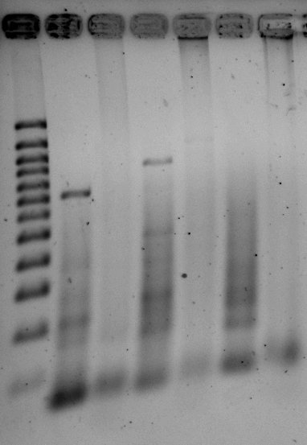

Cloning and Expression of Hepatitis B Virus Surface Antigen (HBsAg)
S, M, and L proteins and Their Serological Subtypes
To Be Done List.
This section is intended to contain published (verified/confirmed) information about the biological structure and function of proteins and their genes connected to this project.
UniProtKB/SwissPROT. The HBsAg is expressed for assembly into the envelope mature virion of HBV in three different lengths which vary in the deletion of their N-terminus; all three forms have 226 amino acids in common, which is the same as the S form (SHBs). The M form (MHBs) has 55 extra N-terminal amino acids added to the S form for a total of 281 amino acids, and the L form (LHBs) has another 108 or 119 amino acids added to the N-terminus, depending on
NCBI. There are countless entries in the NCBI database. See below which are considered reference standards for the various HBV genotypes.
[ ]
The experimental plan will include a plan and backup plan (Plans A and B). The goal is to obtain the coding sequence for the S, M, and L forms
The roadmap will involve these steps:
IMPORTANT!!! Perhaps the first thing to do is to make sure that all important vectors, plasmids, and host strains used in the project and used in general—especially vectors and DNA and host microbes obtained in kits that are either very costly or take too much time to replenish by purchase and acquisitions—are prepared in sufficient stocks/inventories. A guide is given in a genomics reference.
>Notes.
Oligonucleotides and primers have been chemically synthesized and should be available. The coding sequence represents the consensus of multiple alignment analysis of all accession numbers specified by Bartholomeusz & Schaefer as reference sequences for all HBV genotypes
The Two-Step PCR Assembly Method
The LHBs translated sequence is exactly 400 amino acids, or 1200 bp long in oligo form. The consensus sequence was optimized for codon usage in bacteria (E coli, B subtilis). It might need to be optimized to prevent possible tRNA exhaustion. The 1200 bp sequence was divided into three fragments (LHBs F1, LHBs F2, and LHBs F3) and each fragment was submitted to processing by Gene2Oligo. Oligos and primers for gene synthesis are to be chemically synthesized and purified using at least gels or HPLC (we don't want to risk just using desalted oligos, which may contain shortened fail synthesis oligos).
The following steps will be performed to synthesize the LHBs message:
In addition, for each 5 µl per oligo or primer, let's use 50 pmol, enough for 10 such reactions. Therefore, you want to resuspend the commercial tube of x nmol to a concentration of 50 pmol/5 µl = 10 pmol/µl. If you have x nmol = 1000x pmol, then this is 1000x pmol × 1 µl/10 pmol = 100x µl = (x/10)ml.
The problem is that most vials delivered are about 1 ml maximum in volume. If the value x/10 is > 1, then it is not possible to resuspend that amount. So instead, do the following:
For the time being, we will verify the amplification reaction using restriction digestions instead of sequencing. Perform three digestions with
Check the expected band sizes in the tables below. Run the digests in separated lanes by 2.0% agarose gel electrophoresis in 0.5 × TBE
Simply use 1-3 µl of the LHBs amplification reaction in a new PCR with the primers below to get the SHBs and MHBs. Primers (at 250 nM) will be:
Use an annealing temperature of 60°. Other temperature settings and times are as for the second PCR after PCR assembly.
For purposes of distinguishing DNA sequences created here for expression cloning,
it is suggested that the sequences have the format
[L|M|S]HBs[Cns|Nat][0-9][0-9]. With the [ ] brackets and separated by
the |
character will be one character of L, M, or S depending on the
message. In the case of a sequence generated as a consensus and not spliced
segments from sequences found in nature, the Cns (for sequence) designation is
used. If the sequence could basically generated from joining segments of DNA
that could be cut from natural sequences, the Nat designation is used. Finally
two digits are used ordinally for each sequence created. It is vital to
keep a catalogue with the proper name of the sequence connected with the sequence.
For the consensus LHBs message created for this project, the name shall be LHBsCns01 and it should be included in the naming of other products including/inserting it.d
For the purposes of maintenance cloning, only the LHBs translated code and not the MHBs or SHBs message regions will be inserted into maintenance vector pUC19 and transformed into DH5α for blue-white screening. Successfully transformed hosts will be stored in a deep freezer with a standard cryoprotectant medium. In addition, plasmid preps will be obtained from transformed hosts and stored in the freezer as well.
Chemically competent cells might be purchased rather than generated (?). If purchased, transformation will be according to manufacturer's directions. Subsequent to treatment of DNA with competent cells, 100 µl of cell suspension will be used for each standard 100 mm LB agar plate with the appropriate selection medium at the appropriate concentration.
The purpose of this section will be to take the 1200 bp LHBsCns01 sequence and insert it into 2686 bp pUC19 vector to create pLHBsCns01-UC19. If the OE-PCR method is used, the final product will be a relaxed circular plasmid which has removed bases 402 to 434 of the multiple cloning site, between EcoRI and PstI, at total of 33 bp, and in its place will the 1200 bp LHBsCns01 insert. The resulting product should be 2686 - 33 + 1200 = 3853 bp, pLHBsCns01-UC19. If that product is or can not be created, and the standard cut-and-ligate methods are used, then the LHBs message will be extended by PCR with BamHI and PstI segments and then it and the pUC19 vector are digested with those enzymes. Positions 423 to 434 are removed from the pUC19 vector and the 1200 bp is inserted between, to produce a product that is 2686 - 12 + 1200 = 3874 bp long.
We will try this cloning technique. This is an alternative traditional use of restriction enzyme cutting and ligating inserts into vectors. As a backup, we will have materials and methods for performing the traditional cut-and-ligate technique (see the next section).
OE-PCR saves steps that can affect yields and time of processing. It requires special high fidelity and processive thermostable DNA polymerases. Those polymerases that work as well as NEB Phusion DNA polymerase are used. The general principles for this technique were described by Bryskin & Matsumura (2010).
PCR Amplification of Insert With Vector-Bridging (Overlap) Sequence
pLHBs-UC19: PCR-Based Insertion To Vector Using the Overlap Extension. You will perform at least five reactions: four are with different ratios of vector-insert primers-to-vector ratios, and one is with a control template DNA and its 1.3 kb primers. The tubes can be numbered 1 to 5 (or if tray wells are used, determine their label according to number 1 to 5). The target molecule created in this section is a circular relaxed double-stranded DNA which is 3853 bp in length, with sequences derived from LHBs translation sequence and pUC19 vector. It shall be named pLHBs::UC19
A classic cut-and-ligate will be done on the insert and vector in the event of failure of OE-PCR. First the LHBs message will be extended on the 5′ and 3′ ends using PCR to include restriction sites for enzymes in pUC19 and already ordered for this project for other uses; the sites will be EcoRI and XbaI. Then the amplicon and pUC19 plasmid will be digested with the enzymes. This will be followed by mixing the digests with high insert:vector ratios in the presence of T4 DNA ligase. The ligation reaction is then immediately used to transform competent E coli cells, and transformants detected using blue-white screening.
Before starting the procedure, make sure the following have been prepared:
Perform the following steps:
Expression of the recombinant proteins is the most difficult part of the project. It is made more complicated by the fact that attempts to produce HBsAg in the various have proved difficult because HBsAg is likely toxic to the E coli host or it forms inclusion bodies of insoluble protein product that is difficult to solubilize, or the processes involved in solubilization denature the protein and make it difficult or impossible to re-fold the protein in the proper form for restoring immunoreactivity, necessary to make an ELISA product with the protein product. We are trying to maximize the yield of protein, so even after we find one system that expresses product enough to get started, we must optimize the system, which means continue testing expression systems that produce even more protein
We will initially use a bacterial host. This is generally Eschericia coli, but there is a Bacillus subtilis system to be tried too. Expression in bacterial hosts is usually sufficient for protein to be used for medical diagnostic kit (ELISA, etc) production. The advantages are that bacteria can be grown rapidly at very low cost compared to other expression systems. The disadvantage is that they lack the post-translational modification processes such as glycosylation, particularly for many secreted or membrane proteins that are to be cloned.
Intracellular Expression vs. Secretion. Bacteria can secrete proteins as well as express them intracellularly. When possible, secretion should be preferred since it means that cell extraction is not required, which could eliminate the need for multi-step purification as well as make it possible to express the protein with the use of fusion or chimeric tags, which even of short length might affect the function of the recombinant if the tag is present. In cases where intracellular expression is done, it will likely be tried with a tag for an affinity purification step.
Perform the following steps:
Most of the cloning activities to build the final plasmid will be done in E coli because B. subtilis strain RIK1285 has a low copy number for producing plasmids necessary in construction. The shuttle vector pBE-S will be used as the base in building the plasmid. A mixture of SP (secretory peptides) DNA is provided in the kit for insertion and creating clones.
The pBE-S vector is constructed with an origin of replication from pUB110 and a kanamycin-resistance gene (Kanr) for selection and plasmid copying in B. subtilis. The vector also has a ColE1 origin of replication and an Ampr gene for selection and growth in E coli. The promoter is aprE and the aprE SP (signal peptide).
Target gene is constructed and inserted into the MCS. Note that it cannot contain MluI and Eco52I cutting sites, since the plasmid is linearized using those enzymes for use with the Clontech In-Fusion system to introduce the SP DNA mixture in place of aprE SP, which is the subsequent step. The constructed plasmid with 173 different SP and the insert is now transformed into E coli HST08. From these a plasmid library is now prepared, and these are transformed into B subtilis RIK1285. Screening is then done to look for the highest secretor.
The kit (Cat #3380) contains enough for 10 reactions and has the following three components:
The bacteria must be stored at −80° and the DNA at −20°. Note the pBE-S is in 40 µl of TE pH 8.0 buffer
Additional components required to use the system not in the kit are:
The Takara Bio Systems document describes the step-by-step protocol to use. The first and long set of steps are the construction of the plasmid library.
linearizedusing PCR if the target gene contains MluI or Eco52I sites. The LHBs, but not MHBs and SHBs forms of HBsAg contains an Eco52I (CGGCCG) site at nt 303, so it will have to be cloned using PCR.
With the plasmid library constructed, the plasmids are transformed into B. subtilis, which must be made competent freshly (immediately used).
The NucleoSpin Plasmid kit can be used to purify plasmid. Inoculate with a single colony and shake/incubate overnight at 37°. Spin culture down for 30 s at 11,000 g. Add 250 µl Buffer A1 with lysozyme added to 4-10 mg/ml, vortex or pipet to resuspend pellet and transfer to 1.5 ml microtube (lysozyme may need to be purchased separately). Incubate 30 min 37°, then continue purifying plasmid with the kit, starting at step where Buffer A2 is added. Once the plasmid is purified, PCR might be used to amplify the signal peptide coding segment and then to sequence it.
Insert contains MluI or Eco52I. In the event the insert contains the restriction sites, the plasmid is linearized using inverse PCR. The primers are both 34 nt long with the sequences:
5′-CGCGTCCCTCTCCTTTTGCTTAAGTTCAGAGTAG-3′
5′-GGCCGGTGCACATATGXXXXXXXXXXXXXXXXXX-3′
Incubating E coli at lower temperatures causes the organism to express a set of genes regulated by a cold shock system. This may be useful for recombinant (heterologous) proteins that cause toxicity or which may show unwanted insolubility within the intracellular space (cytoplasm) of the cell. In general, protein expression rates are reduced at cold temperatures except for one system, the cold system. One gene expressed in particular is cspA (cold shock protein A). The DNA elements necessary for transcription and translation of the cspA gene have been isolated and created in a series of vectors called pCOLD and marketed by Takara Bio/Clontech. These elements are in 5′→3′ order:
Immediately following are the MCS and then the 3′ untranslated region containing transcription termination elements.
In addition the vectors contain:
All of these are 5′ to a multiple cloning site featuring unique restriction sites of common enzymes. The features of the series of vectors are as follows:
All four vectors can be purchased (Cat #3360) at 5 µg each, or each vector can be purchased separately at 25 µg each (Cat #3361 through #3364 for vectors pCOLD I-IV).
Factors to control in cultivation and induction are the medium and temperature of culture, aeration, timing of the induction, inducer concentration, and induction time period.
The general protocol for creating expression-competent recombinants is
[to be completed]
[to be completed]
Genotype A (X02763) is renumbered to match other genotype numberings. Positions 1410-3221 are renumbered 1-1812, and positions 1-1409 are renumbered 1813-3221.
+--- Legend ----------------------------------------------------------+
| Numbering: |
| xxx-xxx: numbering of all amino acids in sequence |
| [xxx-xxx]: numbering of amino acids in region/domain of S protein |
| 1. * S protein position 122 d|y determinant Lys→Arg variation |
| 2. # S protein position 160 r|w determinant Lys→Arg variation |
| 3. % ayw1→ayw2 variation,ayw1=adw2 at these positions |
| 4. + adw2→ayw1 variation |
| 5. R122 required for w1 |
| 6. T127 required for w3 |
| 7. L127 and S140 required for w4 |
+---------------------------------------------------------------------+
1- 50:
[ 1- 50]:
1 2 3 4 5
12345678901234567890123456789012345678901234567890
<------------- PreS1 (L - Nterm) -----------------
MGGWSSKPRKGMGTNLSVPNPLGFFPDHQLDPAFGANSNNPDWDFNPVKD X02763 Genotype A (adw2)
-----------....................................... AF297621 Genotype A (african)
..................................K...E.....L..N.. D00330 Genotype B-a (adw)
..................................K...E.....L..H.. AB073858 Genotype B-j (adw)
.........Q........................................ AB033556 Genotype C (adw)
.......H.......................................... AB048704 Genotype C-aus (ayw)
-----------..Q...TS...............R..TA........N.. X02496 Genotype D
-MGL.WTVPLEW.K.I.TT...............R..TR.....H..N.. X75657 Genotype E
..APL.TT.R...Q..................L.R...SS......TN.. X69798 Genotype F (adw4)
-MGL.WTVPLEW.K...AS.....L.........R..T.........K.. AF160501 Genotype G
..APL.TA.R...Q..................L.R...SS......TN.. AY090454 Genotype H
.........Q.....................................N.. P31868 Jap (adr)
.........Q............................H........N.. P12934 Jap (adr)
.........Q.....................................N.. P03140 Jap (adr)
.........Q.....................................N.. Q67867 Kor (adr)
-----------..Q...TS...............R..TA........N.. Bozdayi consensus (D)
MGGWSSKPRKGMGTNLSVPNPLGFFPDHQLDPAFRANSNNPDWDFNPNKD consensus 1
V consensus 2
51-100:
[ 51-100]:
1 2 3 4 5
12345678901234567890123456789012345678901234567890
----------------- PreS1 (L - Nterm) --------------
DWPAANQVGVGAFGPRLTPPHGGILGWSPQAQGILTTVSTIPPPASTNRQ X02763 Genotype A (adw2)
H..Q.H.........GF......V...........A.LPAV......... AF297621 Genotype A (african)
N..D..K........GF......L.........L....PAA......... D00330 Genotype B-a (adw)
N..D.HK.......SGF......L............S.PAA......... AB073858 Genotype B-j (adw)
H..E.....A.....GF......L..............PAA......... AB033556 Genotype C (adw)
H..E.....A.....GF......F..............PAA......... AB048704 Genotype C-aus (ayw)
T..D..K..A....LGF......L...........E.LPAN......... X02496 Genotype D
H.TE..K........GF......L.........M.K.LPAD......... X75657 Genotype E
S..M..K....GY..GF......L.........V...LPAD........R X69798 Genotype F (adw4)
P..E..K.....Y..GF......L......S..T...LPAD......... AF160501 Genotype G
N..M..K....G...GF......L.............SPPD........R AY090454 Genotype H
H..E.......T...GF......L..............PAA......... P31868 Jap (adr)
...E...........GF......L.........V....PVA......... P12934 Jap (adr)
Q..E.....A.....GF......L..............PAA......... P03140 Jap (adr)
R..E.....A.....GYP.....L..............PAA......... Q67867 Kor (adr)
T..D..K..A....LGF......L...........Q.LPAN......... Bozdayi consensus (D)
HWPDANKVGVGAFGPGFTPPHGGLLGWSPQAQGILTTLPADPPPASTNRQ consensus 1
N E Q V A consensus 2
101-119:
[101-119]:
1 2 3 4 5
12345678901234567890123456789012345678901234567890
--- PreS1 -------->
SGRQPTPISPPLRDSHPQA X02763 Genotype A (adw2)
................... AF297621 Genotype A (african)
.......L......T.... D00330 Genotype B-a (adw)
.......L......T.... AB073858 Genotype B-j (adw)
................... AB033556 Genotype C (adw)
..............T.... AB048704 Genotype C-aus (ayw)
.......L.....NT.... X02496 Genotype D
........T.....T.... X75657 Genotype E
...K...V......T.... X69798 Genotype F (adw4)
................... AF160501 Genotype G
...K...V......T.... AY090454 Genotype H
................... P31868 Jap (adr)
................... P12934 Jap (adr)
................... P03140 Jap (adr)
................... Q67867 Kor (adr)
.......L.....NT.... Bozdayi consensus (D)
SGRQPTPISPPLRDTHPQA consensus 1
L S consensus 2
120-169:
[ 1- 50]:
1 2 3 4 5
12345678901234567890123456789012345678901234567890
<---------------- PreS2 (M - Nterm) --------------
MQWNSTAFHQTLQDPRVRGLYLPAGGSSSGTVNPAPNIASHISSISARTG X02763 Genotype A (adw2)
..........A..........F.........L..V.....L.....ST.. AF297621 Genotype A (african)
......T........G..A..F..........S..Q.TV.A....LSK.. D00330 Genotype B-a (adw)
......T...........A.............S..Q.TV.A....LSK.. AB073858 Genotype B-j (adw)
......T...A.L........F............V.TT..P...TFS... AB033556 Genotype C (adw)
..........A..........F............V..TV......FTK.. AB048704 Genotype C-aus (ayw)
......T..............F............V.TTV.P....FS.I. X02496 Genotype D
......T...A..........F............V.TT..L....FS.I. X75657 Genotype E
......Q...A.L.....A..F.........Q....T...LT...FSK.. X69798 Genotype F (adw4)
..........A..N.K.....F............V.T........FS.I. AF160501 Genotype G
......Q...A.L........F.......E.Q..V.T...LT...FSK.. AY090454 Genotype H
......T...A.L........F............V.TT..P....FS... P31868 Jap (adr)
......T...A.L........F............V.TT..P....FS... P12934 Jap (adr)
......T...A.L........F............V.TT..P....FS... P03140 Jap (adr)
......T...V.L........F.P..........V.TT..P.....S... Q67867 Kor (adr)
......T..............F............V.TTV.P....FS.I. Bozdayi consensus (D)
MQWNSTTFHQALQDPRVRGLYFPAGGSSSGTVNPVPTIASLISSIFSRTG consensus 1
A T H K consensus 2
170-174:
[ 51- 55]:
1 2 3 4 5
12345678901234567890123456789012345678901234567890
PreS2>
DPVTN X02763 Genotype A (adw2)
...P. AF297621 Genotype A (african)
...P. D00330 Genotype B-a (adw)
...P. AB073858 Genotype B-j (adw)f
..AP. AB033556 Genotype C (adw)
..AS. AB048704 Genotype C-aus (ayw)
..AL. X02496 Genotype D
..AP. X75657 Genotype E
G.AM. X69798 Genotype F (adw4)
..AP. AF160501 Genotype G
..AM. AY090454 Genotype H
..AP. P31868 Jap (adr)
..AP. P12934 Jap (adr)
..AP. P03140 Jap (adr)
..AP. Q67867 Kor (adr)
..AL. Bozdayi consensus (D)
DPAPN consensus 1
VS consensus 2
175-224:
[ 1- 50]:
1 2 3 4 5
12345678901234567890123456789012345678901234567890
<------------- S protein ----------------------
MENITSGFLGPLLVLQAGFFLLTRILTIPQSLDSWWTSLNFLGGSPVCLG X02763 Genotype A (adw2)
.................................................. AF297621 Genotype A (african)
....A..L...............K....................T..... D00330 Genotype B-a (adw)
....A..L...............K....................T..... AB073858 Genotype B-j (adw)
...T........................................A.T.P. AB033556 Genotype C (adw)
..ST........................................A.G.I. AB048704 Genotype C-aus (ayw)
............................................TT.... X02496 Genotype D
..S....................K....................A..... X75657 Genotype E
.D.....L.........VC....K....................L.G.P. X69798 Genotype F (adw4)
............................................V...P. AF160501 Genotype G
.......L.........VC....K...................VP.G.P. AY090454 Genotype H
....................W.......................A.T.P. Q69598 (ayr)
...T........................................A.T.P. P31868 Jap (adr)
...T........................................A.T.P. P12934 Jap (adr)
...T........................................A.T.P. P03140 Jap (adr)
..ST........................................A.T.P. Q67867 Jap (adr)
............................................TT.... Bozdayi consensus (D)
MENITSGFLGPLLVLQAGFFLLTRILTIPQSLDSWWTSLNFLGGTPVCLG consensus 1
L K P consensus 2
225-274:
[ 51-100]:
1 2 3 4 5
12345678901234567890123456789012345678901234567890
-------------- S protein -------------------------
QNSQSPTSNHSPTSCPPICPGYRWMCLRRFIIFLFILLLCLIFLLVLLDY X02763 Genotype A (adw2)
.................................................. AF297621 Genotype A (african)
.....QI.S....C....................C............... D00330 Genotype B-a (adw)
.....QI.S....C...........Y........C............... AB073858 Genotype B-j (adw)
.................................................. AB033556 Genotype C (adw)
.....Q...........T................................ AB048704 Genotype C-aus (ayw)
.................T................................ X02496 Genotype D
........S......................................... X75657 Genotype E
..........L......T................................ X69798 Genotype F (adw4)
L...........I....T................................ AF160501 Genotype G
..........L......T................................ AY090454 Genotype H
..L............................................... Q69598 (ayr)
.................................................. P31868 Jap (adr)
.................................................. P12934 Jap (adr)
.................................................. P03140 Jap (adr)
.................................................. Q67867 Jap (adr)
.................T................................ Bozdayi consensus (D) (ayw)
QNSQSPTSNHSPTSCPPICPGYRWMCLRRFIIFLFILLLCLIFLLVLLDY consensus 1
T consensus 2
275-324:
[101-150]:
1 2 3 4 5
12345678901234567890123456789012345678901234567890
-------------- S protein -------------------------
* % %
+ + +
@ @ # # Cys-Cys disulfides
<----------- determinant a -----------------------
QGMLPVCPLIPGSTTTSTGPCKTCTTPAQGNSMFPSCCCTKPTDGNCTCI X02763 Genotype A (adw2)
.................................................. AF297621 Genotype A (african)
.............S................T................... D00330 Genotype B-a (adw)
.............S................T.L................. AB073858 Genotype B-j (adw)
.........L..TS...........I....T...........S....... AB033556 Genotype C (adw)
.........L...........R...IT...T...........S....... AB048704 Genotype C-aus (ayw)
.............S.......R........T..Y........S....... X02496 Genotype D
.............S.......R....L...T........S..S....... X75657 Genotype E
.........L................L...T........S..S....... X69798 Genotype F (adw4)
.............S...................Y........S....... AF160501 Genotype G
.........L................L...T...........S....... AY090454 Genotype H
.........L..TS.......R........T...........S....... Q69598 (ayr)
.........L..TS................T...........S....... P31868 Jap (adr)
.........L..TS...........I....T...........S....... P12934 Jap (adr)
.........L..TS...........I....T...........S....... P03140 Jap (adr)
.........L..TS...........I....T...........S....... Q67867 Jap (adr)
.............S.......R........T..Y........S....... Bozdayi consensus (D) (ayw)
QGMLPVCPLIPGSSTTSTGPCKTCTTPAQGTSMFPSCCCTKPSDGNCTCI consensus 1
T R consensus 2
325-374:
[151-200]:
1 2 3 4 5
12345678901234567890123456789012345678901234567890
-------------- S protein -------------------------
%#% % @ W182S or W182C, G185E important
-det a--> ! @! @ ! = P178Q, F183C in adw4
PIPSSWAFAKYLWEWASVRFSWLSLLVPFVQWFVGLSPTVWLSAIWMMWY X02763 Genotype A (adw2)
.................................................. AF297621 Genotype A (african)
...........................................V...I.F D00330 Genotype B-a (adw)
...........................................V...... AB073858 Genotype B-j (adw)
..........F......................A.........V...... AB033556 Genotype C (adw)
......G...F......................A.........V...I.. AB048704 Genotype C-aus (ayw)
........G.F......A.........................V...... X02496 Genotype D
........G.F......A...............A.........V...... X75657 Genotype E
.......LG........A.........Q....C.........LV...I.. X69798 Genotype F (adw4)
.................................................. AF160501 Genotype G
........G........A.........Q....C.........LV...I.. AY090454 Genotype H
.........RF......A.........................V...... Q69598 (ayr)
.........RF......................A.........V...... P31868 Jap (adr)
.........RF...G............................V...... P12934 Jap (adr)
.........RF................................V...... P03140 Jap (adr)
.........RF...G............................V...... Q67867 Jap (adr)
........G.F......A.........................V...... Bozdayi consensus (D) (ayw)
PIPSSWAFAKYLWEWASVRFSWLSLLVPFVQWFVGLSPTVWLSVIWMMWY consensus 1
GRF A consensus 2
375-400:
[201-226]:
1 2 3 4 5
12345678901234567890123456789012345678901234567890
------- S protein ------->
WGPSLYSIVSPFIPLLPIFFCLWVYI X02763 Genotype A (adw2)
......N.L................. AF297621 Genotype A (african)
......N.L...M............. D00330 Genotype B-a (adw)
......N.L................. AB073858 Genotype B-j (adw)
......N.L...L.......Y..... AB033556 Genotype C (adw)
......N.L...L......L...... AB048704 Genotype C-aus (ayw)
........L...L............. X02496 Genotype D
......N.L................. X75657 Genotype E
...N.C..L..........CY...S. X69798 Genotype F (adw4)
...N..N.L................. AF160501 Genotype G
...N.C..L..........CY..AS. AY090454 Genotype H
.....HN.LN..L............. Q69598 (ayr)
......N.L...L............. P31868 Jap (adr)
......N.L...L............. P12934 Jap (adr)
......N.L...L............. P03140 Jap (adr)
......N.L...L............. Q67867 Jap (adr)
........L...L............. Bozdayi consensus (D)
WGPSLYNILSPFIPLLPIFFCLWVYI consensus 1
N S L Y consensus 2
=============================================================================
CLUSTAL O(1.0.3) multiple sequence alignment
* all positions have fully conserved (only one) residue
: conservation between group with strongly similar properties
score > 0.5 on Gonnet PAM 250 matrxi
. conservation between group with weakly similar properties
score < 0.5 on Gonnet PAM 250 matrxi
[blank] position has residues with no similar properties
MENITSGFLGPLLVLQAGFFLLTRILTIPQSLDSWWTSLNFLGGSPVCLGQNSQSPTSNH Q69589 ayw1
MENTTSGFLGPLLVLQAGFFWLTRILTIPQSLDSWWTSLNFLGGAPTCPGQNSQSPTSNH Q69599 adrq+
MENITSGFLGPLLVLQAGFFLLTRILTIPQSLDSWWTSLNFLGGSPVCLGQNSQSPTSNH Q773S4 adw2
MDNITSGLLGPLLVLQAVCFLLTKILTIPQSLDSWWTSLNFLGGLPGCPGQNSQSPTSNH Q69612 adw4q-
MENIASGLLGPLLVLQAGFFLLTKILTIPQSLDSWWTSLNFLGGTPVCLGQNSQSQISSH Q69593 ayw1
MENITSGFLGPLLVLQAGFFWLTRILTIPQSLDSWWTSLNFLGGTTVCLGQNSQSPTSNH Q69601 ayw2
*:* :**:********* * **:******************** * ****** *.*
SPTSCPPICPGYRWMCLRRFIIFLFILLLCLIFLLVLLDCQGMLPVCPLIPGSTTTSTGP Q69589 ayw1
SPTSCPPICPGYRWMCLRRFIIFLFILLLCLIFLLVLLDYQGMLPVCPLLPGTSTTSTGP Q69599 adrq+
SPTSCPPICPGYRWMCLRRFIIFLFILLLCLIFLLVLLDYQGMLPVCPLIPGSTTTSTGP Q773S4 adw2
LPTSCPPTCPGYRWMCLRRFIIFLFILLLCLIFLLVLLDYQGMLPVCPLIPGSTTTSTGP Q69612 adw4q-
SPTCCPPICPGYRWMCLRRFIIFLCILLLCLIFLLVLLDYQGMLPVCPLIPGSSTTSTGP Q69593 ayw1
SPTSCPPTCPGYRWMCLRRFIIFLFILLLCLIFLLVLLDYQGMLPVCPLIPGSSTTSTGP Q69601 ayw2
**.*** **************** ************** *********:**::******
CRTCTTPAQGNSMFPSCCCTKPTDGNCTCIPIPSSWAFAKYLWEWASVRFSWLSLLVPFV Q69589 ayw1
CKTCTIPAQGTSMFPSCCCTKPSDGNCTCIPIPSSWAFARFLWEWASARFSWLSLLVPFV Q69599 adrq+
CKTCTTPAQGNSMFPSCCCTKPTDGNCTCIPIPSSWAFAKYLWEWASVRFSWLSLLVPFV Q773S4 adw2
CKTCTTLAQGTSMFPSCCCSKPSDGNCTCIPIPSSWALGKYLWEWASARFSWLSLLVQFV Q69612 adw4q-
CRTCTTPAQGTSMFPSCCCTKPTDGNCTCIPIPSSWAFAKYLWEWASVRFSWLSLLVPFV Q69593 ayw1
CRTCTTPAQGTSMYPSCCCTKPSDGNCTCIPIPSSWAFGKFLWEWASARFSWLSLLVPFV Q69601 ayw2
*:*** ***.**:*****:**:**************:.::******.********* **
QWFVGLSPTVWLSVIWMMWYWGPSLYNILSPFIPLLPIFFCLWVYI Q69589 ayw1
QWFAGLSPTVWLSVIWMMWYWGPSLYNILSPFLPLLPIFFCLWVYI Q69599 adrq+
QWFVGLSPTVWLSAIWMMWYWGPSLYSIVSPFIPLLPIFFCLWVYI Q773S4 adw2
QWCVGLSPTVWLLVIWMIWYWGPNLCSILSPFIPLLPIFCCLWVSI Q69612 adw4q-
QWFVGLSPTVWLSVIWMIWYWGPSLYNILSPFMPLLPIFFCLWVYI Q69593 ayw1
QWFVGLSPTVWLSVIWMMWYWGPSLYSILSPFLPLLPIFFCLWVYI Q69601 ayw2
** .******** .***:*****.* .*:***:****** **** *
Four adr isolates of the L (PreS1-PreS2-S) sequence with accession numbers P31868 P12934 P03140, and Q67867 have been entered. The question first is what differences in sequence exist that rule out amino acids that account for the epitopes. In the N-terminal part that creates the L sequence, amino acid position 51 is quite variable (H, D, Q, and R); pos. 60 can be V or A. In the N-terminal part of M, there is no real heterogeneity of sequence. In the S core sequence, position 165 clearly can be G or W. These isolates strongly represent Genotype C reference sequence.
Consider Genotype D, which is ayw. How does it radically differ from adr? Examining only the S core sequence alone, postion 4 is I in every genotype but is T in the adr. Between position 45-49, Genotype D (ayw) is TTVCL but for Genotype C it is APTCP (only C is present at the same position). In the determinat a region between 101-159, position 122 is R in ayw but K in adr. Between 110-113, the sequence is IPGS in ayw, but LPGT in adr. There is a F134Y from ayw to adr. The two amino acids from 159-160 are GK in ayw, and AR in adr. Position 165 is quite variable in adr as noted: G or W, but in ayw it is W. At position 168, ayw is A, but adr is clearly V. Position 207 is clearly N in adr but S in ayw. There is significant decrease in reactivity to 4-7B if W182S or W182C and G185E changes occur.
Below is a record of all nucleotide sequences to be used in the project, either to be synthesized or as part of the process of plasmid construction for recombinants.
Oligonucleotides are to be chemically synthesized that will produce coding (translated) sequence of the S, M, and L proteins that are the three forms of the HBsAg. First the S coding sequence will be entirely chemically synthesized. The S coding sequence used here is not known to be a naturally occurring sequence in any of the various the eight genotypes of HBV, but it is instead a consensus sequence created by the multiple alignment analysis of the reference amino acids of the S coding sequences considered in one paper to be the genotypes of HBV. Why does this make sense? Because if there are multiple sequences available, the alignment would probably show an idealized structure that represents the evolution of the virus with respect to the protein. It is hope that the consensus sequence product is broadly reactive to/against all genotypes, although it is likely that we may need to create recombinants coding exactly for naturally occurring S forms in particular genotypes of interest.
After the consensus sequence was determined, several reverse translations
sequences for the SHBs, MHBs, and LHBs products of HBV were generated using the
Reverse
Translate online tool. The several sequences were necessary because
expression will be tested in different host organisms. Codon usage tables
provided through a link on the Reverse Translate tool were selected in order to
perform the reverse translation. All of the amino acid sequences used for
reverse translation of the S, M, and L proteins are determined as a consenus
based on the multiple alignment analysis of sequences considered by Bartholomeusz &
Schaefer to be reference sequences for the eight HBV genotypes.
| Amino Acid | Codon | Usage | |
|---|---|---|---|
| E coli | B subtilis | ||
| Arg (R) | AGG | 7% | 10% |
| AGA | 13% | 25%* | |
| CGG | 15% | 17% | |
| CGA | 9% | 10% | |
| CGT | 30% | 18% | |
| CGC | 26%* | 20% | |
| Asn (N) | AAT | 59% | 56%* |
| AAC | 41%* | 44% | |
| Gln (Q) | CAG | 65%* | 48% |
| CAA | 35% | 52%* | |
| Thr (T) | ACG | 22% | 27% |
| ACA | 25% | 40%* | |
| ACT | 22% | 16% | |
| ACC | 31%* | 17% | |
| Ser (S) | AGT | 18% | 11% |
| AGC | 20%* | 23% | |
| TCG | 11% | 10% | |
| TCA | 18% | 23%* | |
| TCT | 18% | 20% | |
| TCC | 14% | 13% | |
| Val (V) | GTG | 29%* | 26% |
| GTA | 19% | 20% | |
| GTT | 32% | 28%* | |
| GTC | 19% | 26% | |
| * indicates the codon that was preferred by the reverse translator | |||
To minimize the work necessary for this first stage of bacterial expression in E coli and B subtilis, differences in codon usage between these two species were resolved so that the best single codon for both E coli and B subtilis were selected, rather than trying to create sequences optimized for each, which would require PCR-mediated site-directed mutagenesis and considerable work in sequencing. Comparing the E coli and B subtilis sequences, the following amino acids and their preferred and alternate codons were determined from usage tables for E coli and B subtilis
| Amino Acid | Selected Codon |
|---|---|
| Arg (R) | CGC |
| Asn (N) | AAT |
| Gln (Q) | CAG |
| Thr (T) | ACA |
| Ser (S) | AGC |
| Val (V) | GTT |
The logic of choosing the final codons for bacteria will not be detailed. Rather, the codons to be chosen are listed in the table at the left.
The final editions of the S, M, and L sequences for bacterial expression in E coli and B subtilis are given below
Consensus SHBs protein, 681 nt, 226 aa
1 2 3 4 5 6
123456789012345678901234567890123456789012345678901234567890
Codon usage for E coli
ATGGAAAACATTACCAGCGGCTTTCTGGGCCCGCTGCTGGTGCTGCAGGCGGGCTTTTTT
CTGCTGACCCGCATTCTGACCATTCCGCAGAGCCTGGATAGCTGGTGGACCAGCCTGAAC
TTTCTGGGCGGCACCCCGGTGTGCCTGGGCCAGAACAGCCAGAGCCCGACCAGCAACCAT
AGCCCGACCAGCTGCCCGCCGATTTGCCCGGGCTATCGCTGGATGTGCCTGCGCCGCTTT
ATTATTTTTCTGTTTATTCTGCTGCTGTGCCTGATTTTTCTGCTGGTGCTGCTGGATTAT
CAGGGCATGCTGCCGGTGTGCCCGCTGATTCCGGGCAGCAGCACCACCAGCACCGGCCCG
TGCAAAACCTGCACCACCCCGGCGCAGGGCACCAGCATGTTTCCGAGCTGCTGCTGCACC
AAACCGAGCGATGGCAACTGCACCTGCATTCCGATTCCGAGCAGCTGGGCGTTTGCGAAA
TATCTGTGGGAATGGGCGAGCGTGCGCTTTAGCTGGCTGAGCCTGCTGGTGCCGTTTGTG
CAGTGGTTTGTGGGCCTGAGCCCGACCGTGTGGCTGAGCGTGATTTGGATGATGTGGTAT
TGGGGCCCGAGCCTGTATAACATTCTGAGCCCGTTTATTCCGCTGCTGCCGATTTTTTTT
TGCCTGTGGGTGTATATTTAA
Codon usage for B subtilis
ATGGAAAATATTACATCAGGCTTTCTGGGCCCGCTGCTGGTTCTGCAAGCAGGCTTTTTT
CTGCTGACAAGAATTCTGACAATTCCGCAATCACTGGATTCATGGTGGACATCACTGAAT
TTTCTGGGCGGCACACCGGTTTGCCTGGGCCAAAATTCACAATCACCGACATCAAATCAT
TCACCGACATCATGCCCGCCGATTTGCCCGGGCTATAGATGGATGTGCCTGAGAAGATTT
ATTATTTTTCTGTTTATTCTGCTGCTGTGCCTGATTTTTCTGCTGGTTCTGCTGGATTAT
CAAGGCATGCTGCCGGTTTGCCCGCTGATTCCGGGCTCATCAACAACATCAACAGGCCCG
TGCAAAACATGCACAACACCGGCACAAGGCACATCAATGTTTCCGTCATGCTGCTGCACA
AAACCGTCAGATGGCAATTGCACATGCATTCCGATTCCGTCATCATGGGCATTTGCAAAA
TATCTGTGGGAATGGGCATCAGTTAGATTTTCATGGCTGTCACTGCTGGTTCCGTTTGTT
CAATGGTTTGTTGGCCTGTCACCGACAGTTTGGCTGTCAGTTATTTGGATGATGTGGTAT
TGGGGCCCGTCACTGTATAATATTCTGTCACCGTTTATTCCGCTGCTGCCGATTTTTTTT
TGCCTGTGGGTTTATATTTAA
Codon usage for K lactis
ATGGAAAATATTACTTCTGGTTTCTTGGGTCCATTGTTGGTTTTGCAAGCTGGTTTCTTC
TTGTTGACTAGAATTTTGACTATTCCACAATCTTTGGATTCTTGGTGGACTTCTTTGAAT
TTCTTGGGTGGTACTCCAGTTTGTTTGGGTCAAAATTCTCAATCTCCAACTTCTAATCAT
TCTCCAACTTCTTGTCCACCAATTTGTCCAGGTTATAGATGGATGTGTTTGAGAAGATTC
ATTATTTTCTTGTTCATTTTGTTGTTGTGTTTGATTTTCTTGTTGGTTTTGTTGGATTAT
CAAGGTATGTTGCCAGTTTGTCCATTGATTCCAGGTTCTTCTACTACTTCTACTGGTCCA
TGTAAAACTTGTACTACTCCAGCTCAAGGTACTTCTATGTTCCCATCTTGTTGTTGTACT
AAACCATCTGATGGTAATTGTACTTGTATTCCAATTCCATCTTCTTGGGCTTTCGCTAAA
TATTTGTGGGAATGGGCTTCTGTTAGATTCTCTTGGTTGTCTTTGTTGGTTCCATTCGTT
CAATGGTTCGTTGGTTTGTCTCCAACTGTTTGGTTGTCTGTTATTTGGATGATGTGGTAT
TGGGGTCCATCTTTGTATAATATTTTGTCTCCATTCATTCCATTGTTGCCAATTTTCTTC
TGTTTGTGGGTTTATATTTAA
Codon usage for P pastoris
ATGGAAAACATTACTTCTGGTTTTTTGGGTCCATTGTTGGTTTTGCAAGCTGGTTTTTTT
TTGTTGACTAGAATTTTGACTATTCCACAATCTTTGGATTCTTGGTGGACTTCTTTGAAC
TTTTTGGGTGGTACTCCAGTTTGTTTGGGTCAAAACTCTCAATCTCCAACTTCTAACCAT
TCTCCAACTTCTTGTCCACCAATTTGTCCAGGTTACAGATGGATGTGTTTGAGAAGATTT
ATTATTTTTTTGTTTATTTTGTTGTTGTGTTTGATTTTTTTGTTGGTTTTGTTGGATTAC
CAAGGTATGTTGCCAGTTTGTCCATTGATTCCAGGTTCTTCTACTACTTCTACTGGTCCA
TGTAAGACTTGTACTACTCCAGCTCAAGGTACTTCTATGTTTCCATCTTGTTGTTGTACT
AAGCCATCTGATGGTAACTGTACTTGTATTCCAATTCCATCTTCTTGGGCTTTTGCTAAG
TACTTGTGGGAATGGGCTTCTGTTAGATTTTCTTGGTTGTCTTTGTTGGTTCCATTTGTT
CAATGGTTTGTTGGTTTGTCTCCAACTGTTTGGTTGTCTGTTATTTGGATGATGTGGTAC
TGGGGTCCATCTTTGTACAACATTTTGTCTCCATTTATTCCATTGTTGCCAATTTTTTTT
TGTTTGTGGGTTTACATTTAA
=================================================================
Consensus MHBs protein, 846 nt, 281 aa
1 2 3 4 5 6
123456789012345678901234567890123456789012345678901234567890
Codon usage for E coli
ATGCAGTGGAACAGCACCACCTTTCATCAGGCGCTGCAGGATCCGCGCGTGCGCGGCCTG
TATTTTCCGGCGGGCGGCAGCAGCAGCGGCACCGTGAACCCGGTGCCGACCATTGCGAGC
CTGATTAGCAGCATTTTTAGCCGCACCGGCGATCCGGCGCCGAACATGGAAAACATTACC
AGCGGCTTTCTGGGCCCGCTGCTGGTGCTGCAGGCGGGCTTTTTTCTGCTGACCCGCATT
CTGACCATTCCGCAGAGCCTGGATAGCTGGTGGACCAGCCTGAACTTTCTGGGCGGCACC
CCGGTGTGCCTGGGCCAGAACAGCCAGAGCCCGACCAGCAACCATAGCCCGACCAGCTGC
CCGCCGATTTGCCCGGGCTATCGCTGGATGTGCCTGCGCCGCTTTATTATTTTTCTGTTT
ATTCTGCTGCTGTGCCTGATTTTTCTGCTGGTGCTGCTGGATTATCAGGGCATGCTGCCG
GTGTGCCCGCTGATTCCGGGCAGCAGCACCACCAGCACCGGCCCGTGCAAAACCTGCACC
ACCCCGGCGCAGGGCACCAGCATGTTTCCGAGCTGCTGCTGCACCAAACCGAGCGATGGC
AACTGCACCTGCATTCCGATTCCGAGCAGCTGGGCGTTTGCGAAATATCTGTGGGAATGG
GCGAGCGTGCGCTTTAGCTGGCTGAGCCTGCTGGTGCCGTTTGTGCAGTGGTTTGTGGGC
CTGAGCCCGACCGTGTGGCTGAGCGTGATTTGGATGATGTGGTATTGGGGCCCGAGCCTG
TATAACATTCTGAGCCCGTTTATTCCGCTGCTGCCGATTTTTTTTTGCCTGTGGGTGTAT
ATTTAA
Codon usage for K lactis
ATGCAATGGAATTCTACTACTTTCCATCAAGCTTTGCAAGATCCAAGAGTTAGAGGTTTG
TATTTCCCAGCTGGTGGTTCTTCTTCTGGTACTGTTAATCCAGTTCCAACTATTGCTTCT
TTGATTTCTTCTATTTTCTCTAGAACTGGTGATCCAGCTCCAAATATGGAAAATATTACT
TCTGGTTTCTTGGGTCCATTGTTGGTTTTGCAAGCTGGTTTCTTCTTGTTGACTAGAATT
TTGACTATTCCACAATCTTTGGATTCTTGGTGGACTTCTTTGAATTTCTTGGGTGGTACT
CCAGTTTGTTTGGGTCAAAATTCTCAATCTCCAACTTCTAATCATTCTCCAACTTCTTGT
CCACCAATTTGTCCAGGTTATAGATGGATGTGTTTGAGAAGATTCATTATTTTCTTGTTC
ATTTTGTTGTTGTGTTTGATTTTCTTGTTGGTTTTGTTGGATTATCAAGGTATGTTGCCA
GTTTGTCCATTGATTCCAGGTTCTTCTACTACTTCTACTGGTCCATGTAAAACTTGTACT
ACTCCAGCTCAAGGTACTTCTATGTTCCCATCTTGTTGTTGTACTAAACCATCTGATGGT
AATTGTACTTGTATTCCAATTCCATCTTCTTGGGCTTTCGCTAAATATTTGTGGGAATGG
GCTTCTGTTAGATTCTCTTGGTTGTCTTTGTTGGTTCCATTCGTTCAATGGTTCGTTGGT
TTGTCTCCAACTGTTTGGTTGTCTGTTATTTGGATGATGTGGTATTGGGGTCCATCTTTG
TATAATATTTTGTCTCCATTCATTCCATTGTTGCCAATTTTCTTCTGTTTGTGGGTTTAT
ATTTAA
Codon usage for P pastoris
ATGCAATGGAACTCTACTACTTTTCATCAAGCTTTGCAAGATCCAAGAGTTAGAGGTTTG
TACTTTCCAGCTGGTGGTTCTTCTTCTGGTACTGTTAACCCAGTTCCAACTATTGCTTCT
TTGATTTCTTCTATTTTTTCTAGAACTGGTGATCCAGCTCCAAACATGGAAAACATTACT
TCTGGTTTTTTGGGTCCATTGTTGGTTTTGCAAGCTGGTTTTTTTTTGTTGACTAGAATT
TTGACTATTCCACAATCTTTGGATTCTTGGTGGACTTCTTTGAACTTTTTGGGTGGTACT
CCAGTTTGTTTGGGTCAAAACTCTCAATCTCCAACTTCTAACCATTCTCCAACTTCTTGT
CCACCAATTTGTCCAGGTTACAGATGGATGTGTTTGAGAAGATTTATTATTTTTTTGTTT
ATTTTGTTGTTGTGTTTGATTTTTTTGTTGGTTTTGTTGGATTACCAAGGTATGTTGCCA
GTTTGTCCATTGATTCCAGGTTCTTCTACTACTTCTACTGGTCCATGTAAGACTTGTACT
ACTCCAGCTCAAGGTACTTCTATGTTTCCATCTTGTTGTTGTACTAAGCCATCTGATGGT
AACTGTACTTGTATTCCAATTCCATCTTCTTGGGCTTTTGCTAAGTACTTGTGGGAATGG
GCTTCTGTTAGATTTTCTTGGTTGTCTTTGTTGGTTCCATTTGTTCAATGGTTTGTTGGT
TTGTCTCCAACTGTTTGGTTGTCTGTTATTTGGATGATGTGGTACTGGGGTCCATCTTTG
TACAACATTTTGTCTCCATTTATTCCATTGTTGCCAATTTTTTTTTGTTTGTGGGTTTAC
ATTTAA
Consensus LHBs protein, 1203 nt, 400 aa
1 2 3 4 5 6
123456789012345678901234567890123456789012345678901234567890
Codon usage for E coli
ATGGGCGGCTGGAGCAGCAAACCGCGCAAAGGCATGGGCACCAACCTGAGCGTGCCGAAC
CCGCTGGGCTTTTTTCCGGATCATCAGCTGGATCCGGCGTTTCGCGCGAACAGCAACAAC
CCGGATTGGGATTTTAACCCGAACAAAGATCATTGGCCGGATGCGAACAAAGTGGGCGTG
GGCGCGTTTGGCCCGGGCTTTACCCCGCCGCATGGCGGCCTGCTGGGCTGGAGCCCGCAG
GCGCAGGGCATTCTGACCACCCTGCCGGCGGATCCGCCGCCGGCGAGCACCAACCGCCAG
AGCGGCCGCCAGCCGACCCCGATTAGCCCGCCGCTGCGCGATACCCATCCGCAGGCGATG
CAGTGGAACAGCACCACCTTTCATCAGGCGCTGCAGGATCCGCGCGTGCGCGGCCTGTAT
TTTCCGGCGGGCGGCAGCAGCAGCGGCACCGTGAACCCGGTGCCGACCATTGCGAGCCTG
ATTAGCAGCATTTTTAGCCGCACCGGCGATCCGGCGCCGAACATGGAAAACATTACCAGC
GGCTTTCTGGGCCCGCTGCTGGTGCTGCAGGCGGGCTTTTTTCTGCTGACCCGCATTCTG
ACCATTCCGCAGAGCCTGGATAGCTGGTGGACCAGCCTGAACTTTCTGGGCGGCACCCCG
GTGTGCCTGGGCCAGAACAGCCAGAGCCCGACCAGCAACCATAGCCCGACCAGCTGCCCG
CCGATTTGCCCGGGCTATCGCTGGATGTGCCTGCGCCGCTTTATTATTTTTCTGTTTATT
CTGCTGCTGTGCCTGATTTTTCTGCTGGTGCTGCTGGATTATCAGGGCATGCTGCCGGTG
TGCCCGCTGATTCCGGGCAGCAGCACCACCAGCACCGGCCCGTGCAAAACCTGCACCACC
CCGGCGCAGGGCACCAGCATGTTTCCGAGCTGCTGCTGCACCAAACCGAGCGATGGCAAC
TGCACCTGCATTCCGATTCCGAGCAGCTGGGCGTTTGCGAAATATCTGTGGGAATGGGCG
AGCGTGCGCTTTAGCTGGCTGAGCCTGCTGGTGCCGTTTGTGCAGTGGTTTGTGGGCCTG
AGCCCGACCGTGTGGCTGAGCGTGATTTGGATGATGTGGTATTGGGGCCCGAGCCTGTAT
AACATTCTGAGCCCGTTTATTCCGCTGCTGCCGATTTTTTTTTGCCTGTGGGTGTATATT
TAA
Codon usage for K lactis
ATGGGTGGTTGGTCTTCTAAACCAAGAAAAGGTATGGGTACTAATTTGTCTGTTCCAAAT
CCATTGGGTTTCTTCCCAGATCATCAATTGGATCCAGCTTTCAGAGCTAATTCTAATAAT
CCAGATTGGGATTTCAATCCAAATAAAGATCATTGGCCAGATGCTAATAAAGTTGGTGTT
GGTGCTTTCGGTCCAGGTTTCACTCCACCACATGGTGGTTTGTTGGGTTGGTCTCCACAA
GCTCAAGGTATTTTGACTACTTTGCCAGCTGATCCACCACCAGCTTCTACTAATAGACAA
TCTGGTAGACAACCAACTCCAATTTCTCCACCATTGAGAGATACTCATCCACAAGCTATG
CAATGGAATTCTACTACTTTCCATCAAGCTTTGCAAGATCCAAGAGTTAGAGGTTTGTAT
TTCCCAGCTGGTGGTTCTTCTTCTGGTACTGTTAATCCAGTTCCAACTATTGCTTCTTTG
ATTTCTTCTATTTTCTCTAGAACTGGTGATCCAGCTCCAAATATGGAAAATATTACTTCT
GGTTTCTTGGGTCCATTGTTGGTTTTGCAAGCTGGTTTCTTCTTGTTGACTAGAATTTTG
ACTATTCCACAATCTTTGGATTCTTGGTGGACTTCTTTGAATTTCTTGGGTGGTACTCCA
GTTTGTTTGGGTCAAAATTCTCAATCTCCAACTTCTAATCATTCTCCAACTTCTTGTCCA
CCAATTTGTCCAGGTTATAGATGGATGTGTTTGAGAAGATTCATTATTTTCTTGTTCATT
TTGTTGTTGTGTTTGATTTTCTTGTTGGTTTTGTTGGATTATCAAGGTATGTTGCCAGTT
TGTCCATTGATTCCAGGTTCTTCTACTACTTCTACTGGTCCATGTAAAACTTGTACTACT
CCAGCTCAAGGTACTTCTATGTTCCCATCTTGTTGTTGTACTAAACCATCTGATGGTAAT
TGTACTTGTATTCCAATTCCATCTTCTTGGGCTTTCGCTAAATATTTGTGGGAATGGGCT
TCTGTTAGATTCTCTTGGTTGTCTTTGTTGGTTCCATTCGTTCAATGGTTCGTTGGTTTG
TCTCCAACTGTTTGGTTGTCTGTTATTTGGATGATGTGGTATTGGGGTCCATCTTTGTAT
AATATTTTGTCTCCATTCATTCCATTGTTGCCAATTTTCTTCTGTTTGTGGGTTTATATT
TAA
Codon usage for P pastoris
ATGGGTGGTTGGTCTTCTAAGCCAAGAAAGGGTATGGGTACTAACTTGTCTGTTCCAAAC
CCATTGGGTTTTTTTCCAGATCATCAATTGGATCCAGCTTTTAGAGCTAACTCTAACAAC
CCAGATTGGGATTTTAACCCAAACAAGGATCATTGGCCAGATGCTAACAAGGTTGGTGTT
GGTGCTTTTGGTCCAGGTTTTACTCCACCACATGGTGGTTTGTTGGGTTGGTCTCCACAA
GCTCAAGGTATTTTGACTACTTTGCCAGCTGATCCACCACCAGCTTCTACTAACAGACAA
TCTGGTAGACAACCAACTCCAATTTCTCCACCATTGAGAGATACTCATCCACAAGCTATG
CAATGGAACTCTACTACTTTTCATCAAGCTTTGCAAGATCCAAGAGTTAGAGGTTTGTAC
TTTCCAGCTGGTGGTTCTTCTTCTGGTACTGTTAACCCAGTTCCAACTATTGCTTCTTTG
ATTTCTTCTATTTTTTCTAGAACTGGTGATCCAGCTCCAAACATGGAAAACATTACTTCT
GGTTTTTTGGGTCCATTGTTGGTTTTGCAAGCTGGTTTTTTTTTGTTGACTAGAATTTTG
ACTATTCCACAATCTTTGGATTCTTGGTGGACTTCTTTGAACTTTTTGGGTGGTACTCCA
GTTTGTTTGGGTCAAAACTCTCAATCTCCAACTTCTAACCATTCTCCAACTTCTTGTCCA
CCAATTTGTCCAGGTTACAGATGGATGTGTTTGAGAAGATTTATTATTTTTTTGTTTATT
TTGTTGTTGTGTTTGATTTTTTTGTTGGTTTTGTTGGATTACCAAGGTATGTTGCCAGTT
TGTCCATTGATTCCAGGTTCTTCTACTACTTCTACTGGTCCATGTAAGACTTGTACTACT
CCAGCTCAAGGTACTTCTATGTTTCCATCTTGTTGTTGTACTAAGCCATCTGATGGTAAC
TGTACTTGTATTCCAATTCCATCTTCTTGGGCTTTTGCTAAGTACTTGTGGGAATGGGCT
TCTGTTAGATTTTCTTGGTTGTCTTTGTTGGTTCCATTTGTTCAATGGTTTGTTGGTTTG
TCTCCAACTGTTTGGTTGTCTGTTATTTGGATGATGTGGTACTGGGGTCCATCTTTGTAC
AACATTTTGTCTCCATTTATTCCATTGTTGCCAATTTTTTTTTGTTTGTGGGTTTACATT
TAA
The following sequences for SHBs, MHBs, and LHBs forms of HBsAg are the final for use in expression for bacterial hosts E coli and B subtilis. The HBsAg sequences are the consensus sequences based on multiple alignment of the reference sequences for the HBV genotypes.
Nucleotides for cloning of SHBs in E coli, B subtilis
1 2 3 4 5 6
123456789012345678901234567890123456789012345678901234567890
ATGGAAAATATTACAAGCGGCTTTCTGGGCCCGCTGCTGGTTCTGCAGGCGGGCTTTTTT
M E N I T S G F L G P L L V L Q A G F F
CTGCTGACACGCATTCTGACAATTCCGCAGAGCCTGGATAGCTGGTGGACAAGCCTGAAT
L L T R I L T I P Q S L D S W W T S L N
TTTCTGGGCGGCACACCGGTTTGCCTGGGCCAGAATAGCCAGAGCCCGACAAGCAATCAT
F L G G T P V C L G Q N S Q S P T S N H
AGCCCGACAAGCTGCCCGCCGATTTGCCCGGGCTATCGCTGGATGTGCCTGCGCCGCTTT
S P T S C P P I C P G Y R W M C L R R F
ATTATTTTTCTGTTTATTCTGCTGCTGTGCCTGATTTTTCTGCTGGTTCTGCTGGATTAT
I I F L F I L L L C L I F L L V L L D Y
CAGGGCATGCTGCCGGTTTGCCCGCTGATTCCGGGCAGCAGCACAACAAGCACAGGCCCG
Q G M L P V C P L I P G S S T T S T G P
TGCAAAACATGCACAACACCGGCGCAGGGCACAAGCATGTTTCCGAGCTGCTGCTGCACA
C K T C T T P A Q G T S M F P S C C C T
AAACCGAGCGATGGCAATTGCACATGCATTCCGATTCCGAGCAGCTGGGCGTTTGCGAAA
K P S D G N C T C I P I P S S W A F A K
TATCTGTGGGAATGGGCGAGCGTTCGCTTTAGCTGGCTGAGCCTGCTGGTTCCGTTTGTT
Y L W E W A S V R F S W L S L L V P F V
CAGTGGTTTGTTGGCCTGAGCCCGACAGTTTGGCTGAGCGTTATTTGGATGATGTGGTAT
Q W F V G L S P T V W L S V I W M M W Y
TGGGGCCCGAGCCTGTATAATATTCTGAGCCCGTTTATTCCGCTGCTGCCGATTTTTTTT
W G P S L Y N I L S P F I P L L P I F F
TGCCTGTGGGTTTATATTTAA
C L W V Y I *
MW = 420690 g/mol, GC = 54%
1.0 AU 260 nm = 0.115 µM
Nucleotides for cloning of PreS2 of MHBs in E coli, B subtilis
1 2 3 4 5 6
123456789012345678901234567890123456789012345678901234567890
ATGCAGTGGAATAGCACAACATTTCATCAGGCGCTGCAGGATCCGCGCGTTCGCGGCCTG
M Q W N S T T F H Q A L Q D P R V R G L
TATTTTCCGGCGGGCGGCAGCAGCAGCGGCACAGTTAATCCGGTTCCGACAATTGCGAGC
Y F P A G G S S S G T V N P V P T I A S
CTGATTAGCAGCATTTTTAGCCGCACAGGCGATCCGGCGCCGAAT
L I S S I F S R T G D P A P N
MW = 101843 g/mol, GC = 58%
1.0 AU 260 nm = 0.473 µM
Nucleotides for cloning of PreS1 of LHBs in E coli, B subtilis
1 2 3 4 5 6
123456789012345678901234567890123456789012345678901234567890
ATGGGCGGCTGGAGCAGCAAACCGCGCAAAGGCATGGGCACAAATCTGAGCGTTCCGAAC
M G G W S S K P R K G M G T N L S V P N
CCGCTGGGCTTTTTTCCGGATCATCAGCTGGATCCGGCGTTTCGCGCGAATAGCAACAAT
P L G F F P D H Q L D P A F R A N S N N
CCGGATTGGGATTTTAACCCGAATAAAGATCATTGGCCGGATGCGAATAAAGTTGGCGTT
P D W D F N P N K D H W P D A N K V G V
GGCGCGTTTGGCCCGGGCTTTACACCGCCGCATGGCGGCCTGCTGGGCTGGAGCCCGCAG
G A F G P G F T P P H G G L L G W S P Q
GCGCAGGGCATTCTGACAACACTGCCGGCGGATCCGCCGCCGGCGAGCACAAATCGCCAG
A Q G I L T T L P A D P P P A S T N R Q
AGCGGCCGCCAGCCGACACCGATTAGCCCGCCGCTGCGCGATACACATCCGCAGGCG
S G R Q P T P I S P P L R D T H P Q A
MW = 220510 g/mol, GC = 62%
1.0 AU 260 nm = 0.219 µM
input sequence 1: LHBs fragment 1
1 2 3 4 5 6
123456789012345678901234567890123456789012345678901234567890
ATGGGCGGCTGGAGCAGCAAACCGCGCAAAGGCATGGGCACAAATCTGAGCGTTCCGAAC
CCGCTGGGCTTTTTTCCGGATCATCAGCTGGATCCGGCGTTTCGCGCGAATAGCAACAAT
CCGGATTGGGATTTTAACCCGAATAAAGATCATTGGCCGGATGCGAATAAAGTTGGCGTT
GGCGCGTTTGGCCCGGGCTTTACACCGCCGCATGGCGGCCTGCTGGGCTGGAGCCCGCAG
GCGCAGGGCATTCTGACAACACTGCCGGCGGATCCGCCGCCGGCGAGCACAAATCGCCAG
AGCGGCCGCCAGCCGACACCGATTAGCCCGCCGCTGCGCGATACACATCCGCAGGCGATG
CAGTGGAATAGCACAACATTTCATCAGGCGCTGCAGGATCCGCGCGTTCGCGGCCTGTAT
====== start ======== Gene2Oligo Output (partially edited) ============== The average Tm used for this computation is 67.2 Hybridization Map: * Upper (+) strand is given 5' - 3' * lower (-) strand is 3' - 5' * Numbers are hybridization Tm * [DNA] = 1 microM * [Na+] = 1.0 M) cgcgttcgtttgtcAT-GGGCGGCTGGA GCAGCAAACCGCG-CAAAGGCATGGGCA CAAATCTGAGCGTTCCG-AACC gcgcaagcaaacagTA CCCGCCGACCT-CGTCGTTTGGCGC GTTTCCGTACCCGT-GTTTAGACTCGCAAGGC TTGG 64.08 63.49 66.17 64.41 66.87 68.42 CGCTGGGCT TTTTTCCGGATCATCAGCT-GGATCCGGCGTTTC GCGCGAATAGCAACAA-TCCGGATTGGGATTTTA GCGACCCGA-AAAAAGGCCTAGTAGTCGA CCTAGGCCGCAAAG-CGCGCTTATCGTTGTT AGGCCTAACCCTAAAAT- 2 68.44 64.5 66.65 63.6 ACCCGAATAAAGATCATTG-GCCGGATGCGAAT AAAGTTGGCGTTGGC-GCGTTTGGCCCG GGCTTTACACCGCC-GC TGGGCTTATTTCTAGTAAC CGGCCTACGCTTA-TTTCAACCGCAACCG CGCAAACCGGGC-CCGAAATGTGGCGG CG 63.80 63.26 66.2 64.45 64.88 66 ATGGCGGCCT GCTGGGCTGGAGC-CCGCAGGCGCA GGGCATTCTGACAACA-CTGCCGGCGGA TCCGCCGCCGG-CG TACCGCCGGA-CGACCCGACCTCG GGCGTCCGCGT-CCCGTAAGACTGTTGT GACGGCCGCCT-AGGCGGCGGCC GC .21 66.96 65.62 65.0 64.05 68.46 66 AGCACAAATCGCC AGAGCGGCCGC-CAGCCGACACCGA TTAGCCCGCCGC-TGCGCGATACACATC CGCAGGCGATG TCGTGTTTAGCGG-TCTCGCCGGCG GTCGGCTGTGGCT-AATCGGGCGGCG ACGCGCTATGTGTAG-GCGTCCGCTAC .43 64.65 65.34 65.63 64.53 64.1 C-AGTGGAATAGCACAACA TTTCATCAGGCGCTG-CAGGATCCGCGCG TTCGCGGCCTGT-ATcactggtgcccc G TCACCTTATCGTGTTGT-AAAGTAGTCCGCGAC GTCCTAGGCGCGC-AAGCGCCGGACA TAgtgaccacgggg 64.26 64.8 67.38 64.40 65.88
Statistics:
Min Tm is 63.26° C
Avg Tm is 65.40° C
Max Tm is 68.46° C
Min hybridization unit size is 11 nucleotides
Avg hybridization unit size is 13.9 nucleotides
Max hybridization unit size is 19 nucleotides
Oligonucleotides to be synthesized:
* All sequence are 5'- 3'
* R stand for reverse or (-) strand
* F for forward or (+) strand
* Sequence in lower case is extra sequence
used for termination and does not belong
to the input sequence
1 2 3 4
# nt 1234567890123456789012345678901234567890
== ==== ========================================
1 R0 16 ATgacaaacgaacgcg
2 F0 27 cgcgttcgtttgtcATGGGCGGCTGGA
3 R16 24 CGCGGTTTGCTGCTCCAGCCGCCC
4 F27 27 GCAGCAAACCGCGCAAAGGCATGGGCA
5 R40 31 CGGAACGCTCAGATTTGTGCCCATGCCTTTG
6 F54 30 CAAATCTGAGCGTTCCGAACCCGCTGGGCT
7 R71 32 AGCTGATGATCCGGAAAAAAGCCCAGCGGGTT
8 F84 33 TTTTTCCGGATCATCAGCTGGATCCGGCGTTTC
9 R103 30 TTGTTGCTATTCGCGCGAAACGCCGGATCC
10 F117 33 GCGCGAATAGCAACAATCCGGATTGGGATTTTA
11 R133 36 CAATGATCTTTATTCGGGTTAAAATCCCAATCCGGA
12 F150 32 ACCCGAATAAAGATCATTGGCCGGATGCGAAT
13 R169 28 GCCAACGCCAACTTTATTCGCATCCGGC
14 F182 27 AAAGTTGGCGTTGGCGCGTTTGGCCCG
15 R197 26 GGCGGTGTAAAGCCCGGGCCAAACGC
16 F209 26 GGCTTTACACCGCCGCATGGCGGCCT
17 R223 25 GCTCCAGCCCAGCAGGCCGCCATGC
18 F235 24 GCTGGGCTGGAGCCCGCAGGCGCA
19 R248 27 TGTTGTCAGAATGCCCTGCGCCTGCGG
20 F259 27 GGGCATTCTGACAACACTGCCGGCGGA
21 R275 22 CCGGCGGCGGATCCGCCGGCAG
22 F286 26 TCCGCCGCCGGCGAGCACAAATCGCC
23 R297 26 GCGGCCGCTCTGGCGATTTGTGCTCG
24 F312 24 AGAGCGGCCGCCAGCCGACACCGA
25 R323 25 GCGGCGGGCTAATCGGTGTCGGCTG
26 F336 27 TTAGCCCGCCGCTGCGCGATACACATC
27 R348 27 GCATCGCCTGCGGATGTGTATCGCGCA
28 F363 29 CGCAGGCGATGCAGTGGAATAGCACAACA
29 R375 32 CAGCGCCTGATGAAATGTTGTGCTATTCCACT
30 F392 28 TTTCATCAGGCGCTGCAGGATCCGCGCG
31 R407 25 ACAGGCCGCGAACGCGCGGATCCTG
32 F420 26 TTCGCGGCCTGTATcactggtgcccc
33 F432 14 ggggcaccagtgAT
=====
892
====== end ======== Gene2Oligo Output (partially edited) ==============
input sequence 2: LHBs fragment 2
1 2 3 4 5 6
123456789012345678901234567890123456789012345678901234567890
TTTCCGGCGGGCGGCAGCAGCAGCGGCACAGTTAATCCGGTTCCGACAATTGCGAGCCTG
ATTAGCAGCATTTTTAGCCGCACAGGCGATCCGGCGCCGAATATGGAAAATATTACAAGC
GGCTTTCTGGGCCCGCTGCTGGTTCTGCAGGCGGGCTTTTTTCTGCTGACACGCATTCTG
ACAATTCCGCAGAGCCTGGATAGCTGGTGGACAAGCCTGAATTTTCTGGGCGGCACACCG
GTTTGCCTGGGCCAGAATAGCCAGAGCCCGACAAGCAATCATAGCCCGACAAGCTGCCCG
CCGATTTGCCCGGGCTATCGCTGGATGTGCCTGCGCCGCTTTATTATTTTTCTGTTTATT
CTGCTGCTGTGCCTGATTTTTCTGCTGGTTCTGCTGGATTATCAGGGCATGCTGCCGGTT
====== start ======== Gene2Oligo Output (partially edited) ==============
The average Tm used for this computation is 64.4
Hybridization Map:
* Upper (+) strand is given 5' - 3'
* lower (-) strand is 3' - 5'
* Numbers are hybridization Tm
* [DNA] = 1 microM
* [Na+] = 1.0 M)
TTTCCGGCGGGC-GGCAGCAGCAGC GGCACAGTTAATCCG-GTTCCGACAATTGCG AGCCTGATTAGCAGC-ATTTTT
AAAGGCCGCCCG CCGTCGTCGTCG-CCGTGTCAATTAGGC CAAGGCTGTTAACGC-TCGGACTAATCGTCG TAAAAA
62.30 64.04 62.001 63.54 63.7 61.36
AGCCGCACA GGCGATCCGGC-GCCGAATATGGAAAATAT TACAAGCGGCTTTCT-GGGCCCGCTGC TGGTTCTGCAG
TCGGCGTGT-CCGCTAGGCCG CGGCTTATACCTTTTATA-ATGTTCGCCGAAAGA CCCGGGCGACG-ACCAAGACGTC
61.56 60.75 63.05 66.3 62.43
GC-GGGCTTTTTTCTGCT GACACGCATTCTGAC-AATTCCGCAGAGCC TGGATAGCTGGTGG-ACAAGCCTGAATTTT
CG CCCGAAAAAAGACGA-CTGTGCGTAAGACTG TTAAGGCGTCTCGG-ACCTATCGACCACC TGTTCGGACTTAAAA
62.156 62.34 63.62 61.3 62.320
CT GGGCGGCACAC-CGGTTTGCCTGGG CCAGAATAGCCAGAGC-CCGACAAGCAATCAT AGCCCGACAAGC-TGCCC
GA-CCCGCCGTGTG GCCAAACGGACCC-GGTCTTATCGGTCTCG GGCTGTTCGTTAGTA-TCGGGCTGTTCG ACGGG
62.33 63.94 64.59 61.541 61.379 64.57
GCCGATT TGCCCGGGCTAT-CGCTGGATGTGCCT GCGCCGCTTTATTA-TTTTTCTGTTTATTCTGCT GCTGTGCCT
CGGCTAA-ACGGGCCCGATA GCGACCTACACGGA-CGCGGCGAAATAAT AAAAAGACAAATAAGACGA-CGACACGGA
62.57 66.74 61.09 61.44 60.80
GATTT-TTCTGCTGGTTCTGC TGGATTATCAGGGCA-TGCTGCCGGTTc gtagtgcgccgt
CTAAA AAGACGACCAAGACG-ACCTAATAGTCCCGT ACGACGGCCAAg-catcacgcggca
64.29 61.51 61.851 61.46
Statistics:
Min Tm is 60.75° C
Avg Tm is 62.67° C
Max Tm is 66.74° C
Min hybridization unit size is 11 nucleotides
Avg hybridization unit size is 13.9 nucleotides
Max hybridization unit size is 19 nucleotides
Oligonucleotides to be synthesized:
* All sequence are 5'- 3'
* R stand for reverse or (-) strand
* F for forward or (+) strand
* Sequence in lower case is extra sequence
used for termination and does not belong
to the input sequence
1 2 3 4
# nt 1234567890123456789012345678901234567890
== ==== ========================================
1 R0 12 GCCCGCCGGAAA
2 F0 24 TTTCCGGCGGGCGGCAGCAGCAGC
3 R12 27 CGGATTAACTGTGCCGCTGCTGCTGCC
4 F24 30 GGCACAGTTAATCCGGTTCCGACAATTGCG
5 R39 30 GCTGCTAATCAGGCTCGCAATTGTCGGAAC
6 F54 30 AGCCTGATTAGCAGCATTTTTAGCCGCACA
7 R69 26 GCCGGATCGCCTGTGCGGCTAAAAAT
8 F84 29 GGCGATCCGGCGCCGAATATGGAAAATAT
9 R95 33 AGAAAGCCGCTTGTAATATTTTCCATATTCGGC
10 F113 26 TACAAGCGGCTTTCTGGGCCCGCTGC
11 R128 24 GCCTGCAGAACCAGCAGCGGGCCC
12 F139 28 TGGTTCTGCAGGCGGGCTTTTTTCTGCT
13 R152 30 GTCAGAATGCGTGTCAGCAGAAAAAAGCCC
14 F167 29 GACACGCATTCTGACAATTCCGCAGAGCC
15 R182 28 CCACCAGCTATCCAGGCTCTGCGGAATT
16 F196 31 TGGATAGCTGGTGGACAAGCCTGAATTTTCT
17 R210 28 GTGTGCCGCCCAGAAAATTCAGGCTTGT
18 F227 24 GGGCGGCACACCGGTTTGCCTGGG
19 R238 29 GCTCTGGCTATTCTGGCCCAGGCAAACCG
20 F251 31 CCAGAATAGCCAGAGCCCGACAAGCAATCAT
21 R267 27 GCTTGTCGGGCTATGATTGCTTGTCGG
22 F282 24 AGCCCGACAAGCTGCCCGCCGATT
23 R294 24 ATAGCCCGGGCAAATCGGCGGGCA
24 F306 26 TGCCCGGGCTATCGCTGGATGTGCCT
25 R318 28 TAATAAAGCGGCGCAGGCACATCCAGCG
26 F332 33 GCGCCGCTTTATTATTTTTCTGTTTATTCTGCT
27 R346 33 AAATCAGGCACAGCAGCAGAATAAACAGAAAAA
28 F365 29 GCTGTGCCTGATTTTTCTGCTGGTTCTGC
29 R379 30 TGCCCTGATAATCCAGCAGAACCAGCAGAA
30 F394 27 TGGATTATCAGGGCATGCTGCCGGTTc
31 R409 24 acggcgcactacgAACCGGCAGCA
32 R421 12 gtagtgcgccgt
=====
866
====== end ======== Gene2Oligo Output (partially edited) ==============
input sequence 3: LHBs fragment 3
1 2 3 4 5 6
123456789012345678901234567890123456789012345678901234567890
TGCCCGCTGATTCCGGGCAGCAGCACAACAAGCACAGGCCCGTGCAAAACATGCACAACA
CCGGCGCAGGGCACAAGCATGTTTCCGAGCTGCTGCTGCACAAAACCGAGCGATGGCAAT
TGCACATGCATTCCGATTCCGAGCAGCTGGGCGTTTGCGAAATATCTGTGGGAATGGGCG
AGCGTTCGCTTTAGCTGGCTGAGCCTGCTGGTTCCGTTTGTTCAGTGGTTTGTTGGCCTG
AGCCCGACAGTTTGGCTGAGCGTTATTTGGATGATGTGGTATTGGGGCCCGAGCCTGTAT
AATATTCTGAGCCCGTTTATTCCGCTGCTGCCGATTTTTTTTTGCCTGTGGGTTTATATT
====== start ======== Gene2Oligo Output (partially edited) ==============
The average Tm used for this computation is 63.9
Hybridization Map:
* Upper (+) strand is given 5' - 3'
* lower (-) strand is 3' - 5'
* Numbers are hybridization Tm
* [DNA] = 1 microM
* [Na+] = 1.0 M)
aTGCCCGCTGATTC-CGGGCAGCAGC ACAACAAGCACAGG-CCCGTGCAAAACA TGCACAACACCGG-CGCAGGGCAC
tACGGGCGACTAAG GCCCGTCGTCG-TGTTGTTCGTGTCC GGGCACGTTTTGT-ACGTGTTGTGGCC GCGTCCCGTG
60.809 62.4 60.59 60.39 63.27 60.56
A AGCATGTTTCCGAG-CTGCTGCTGCACA AAACCGAGCGATGG-CAATTGCACATGCAT TCCGATTCCGAGC-AGCT
T-TCGTACAAAGGCTC GACGACGACGTGT-TTTGGCTCGCTACC GTTAACGTGTACGTA-AGGCTAAGGCTCG TCGA
59.96 63.3 63.58 60.27 61.28 60.6
GGGCGTTT GCGAAATATCTGTGGG-AATGGGCGAGCG TTCGCTTTAGCTGG-CTGAGCCTGCTGG TTCCGTTTGTTC
CCCGCAAA-CGCTTTATAGACACCC TTACCCGCTCGC-AAGCGAAATCGACC GACTCGGACGACC-AAGGCAAACAAG
62.62 62.07 59.96 62.62 60.27
AGT-GGTTTGTTGGCCTG AGCCCGACAGTTT-GGCTGAGCGTTATT TGGATGATGTGGTATTG-GGGCCCGAGCC TG
TCA CCAAACAACCGGAC-TCGGGCTGTCAAA CCGACTCGCAATAA-ACCTACTACACCATAAC CCCGGGCTCGG-AC
62.04 60.86 60.06 61.85 64.75 62
TATAATATTCTGAGCCC-GTTTATTCCGCTGCT GCCGATTTTTTTTTGC-CTGTGGGTTTATATTcct gcagccggta
ATATTATAAGACTCGGG CAAATAAGGCGACGA-CGGCTAAAAAAAAACG GACACCCAAATATAAgga-cgtcggccat
.255 61.537 60.798 61.95 61.60
gg
cc
Statistics:
Min Tm is 59.96° C
Avg Tm is 61.56° C
Max Tm is 64.75° C
Min hybridization unit size is 11 nucleotides
Avg hybridization unit size is 13.9 nucleotides
Max hybridization unit size is 19 nucleotides
Oligonucleotides to be synthesized:
* All sequence are 5'- 3'
* R stand for reverse or (-) strand
* F for forward or (+) strand
* Sequence in lower case is extra sequence
used for termination and does not belong
to the input sequence
1 2 3 4
# nt 1234567890123456789012345678901234567890
== ==== ========================================
1 R0 14 GAATCAGCGGGCAt
2 F0 25 aTGCCCGCTGATTCCGGGCAGCAGC
3 R14 25 CCTGTGCTTGTTGTGCTGCTGCCCG
4 F25 27 ACAACAAGCACAGGCCCGTGCAAAACA
5 R39 26 CCGGTGTTGTGCATGTTTTGCACGGG
6 F52 24 TGCACAACACCGGCGCAGGGCACA
7 R65 25 CTCGGAAACATGCTTGTGCCCTGCG
8 F76 27 AGCATGTTTCCGAGCTGCTGCTGCACA
9 R90 27 CCATCGCTCGGTTTTGTGCAGCAGCAG
10 F103 29 AAACCGAGCGATGGCAATTGCACATGCAT
11 R117 28 GCTCGGAATCGGAATGCATGTGCAATTG
12 F132 25 TCCGATTCCGAGCAGCTGGGCGTTT
13 R145 28 CCCACAGATATTTCGCAAACGCCCAGCT
14 F157 28 GCGAAATATCTGTGGGAATGGGCGAGCG
15 R173 26 CCAGCTAAAGCGAACGCTCGCCCATT
16 F185 27 TTCGCTTTAGCTGGCTGAGCCTGCTGG
17 R199 28 ACTGAACAAACGGAACCAGCAGGCTCAG
18 F212 29 TTCCGTTTGTTCAGTGGTTTGTTGGCCTG
19 R227 27 AAACTGTCGGGCTCAGGCCAACAAACC
20 F241 27 AGCCCGACAGTTTGGCTGAGCGTTATT
21 R254 31 CAATACCACATCATCCAAATAACGCTCAGCC
22 F268 28 TGGATGATGTGGTATTGGGGCCCGAGCC
23 R285 30 GGGCTCAGAATATTATACAGGCTCGGGCCC
24 F296 34 TGTATAATATTCTGAGCCCGTTTATTCCGCTGCT
25 R315 31 GCAAAAAAAAATCGGCAGCAGCGGAATAAAC
26 F330 34 GCCGATTTTTTTTTGCCTGTGGGTTTATATTcct
27 R346 30 cctaccggctgcaggAATATAAACCCACAG
28 R364 12 gcagccggtagg
=====
752
====== end ======== Gene2Oligo Output (partially edited) ==============
This section should contain the information about all oligonucleotides and primers to be used for gene synthesis by PCR assembly. Other primers and oligos for standard cloning techniques should be found in another section.
Melting temperature calculations for oligos and primers were done with an online calculator using as parameters [oligo] = 0.1 µM, [Na+] = 50 mM, [Mg2+] = 1.5 mM, and [dNTPs] = 0.2 mM.
[name: L1L2fo]
LHBsF1-LHBsF2 overlap sense oligo (complements anti-sense)
5′-GCGCGTTCGCGGCCTGTATTTTCCGGCGGGCGGCAG-3′ (19 + 17 = 36 nt)
67-68° | 67-68°
[name: L1L2ro]
LHBsF1-LHBsF2 anti-sense oligo (complements sense)
5′-CTGCCGCCCGCCGGAAAATACAGGCCGCGAACGCGC-3′ (17 + 19 = 36 nt)
67-68° | 67-68°
[name: L2L3fo]
LHBsF2-LHBsF3 overlap sense oligo (complements anti-sense)
5′-GATTATCAGGGCATGCTGCCGGTTTGCCCGCTGATTCCGGGC-3′ (24 + 18 = 42 nt)
67-68° | 67-68°
[name: L2L3ro]
LHBsF2-LHBsF3 anti-sense oligo (complements sense)
5′-GCCCGGAATCAGCGGGCAAACCGGCAGCATGCCCTGATAATC-3′ (18 + 24 = 42 nt)
67-68° | 67-68°
The reverse-complement (anti-sense) primers for SHBs, MHBs, and LHBs are all shared (identical), since their 3′ ends are in common.
[name: LHBsfp]
LHBs 5′-sense (forward) primer (complements anti-sense)
5′-ATGGGCGGCTGGAGCAGC-3′ (18 nt)
67-68°
[name: LHBsrp]
LHBs 3′-anti-sense (reverse complement) primer (complements sense)
5′-AATATAAACCCACAGGCAAAAAAAAATCGGCAG-3′ (33 nt)
67-68°
[name: MHBsfp]
MHBs 5′-sense (forward) primer (complements anti-sense)
5′-ATGCAGTGGAATAGCACAACATTTCATCAGG-3′ (31 nt)
67-68°
[name: SHBsfp]
SHBs 5′-sense (forward) primer (complements anti-sense)
5′-ATGGAAAATATTACAAGCGGCTTTCTGGGC-3′ (30 nt)
67-68°
These are the primers for doing maintenance cloning into pUC19. The forward primer includes the pUC19 vector portion 5′ to the
The reverse complement primer on its 5′ end includes
sequence from the pUC19 vector just 3′ to the XbaI site in the mcs.
The forward primers between the |
character and the 3′ end contain
5′ sequence from the inserts, and the reverse primer between the 5′
end and the |
character is sequence from the 3′ end of the insert.
[name: OE-UC19-LHBs-fp]
OE-PCR-pUC19-LHBs sense (forward) primer (complements anti-sense) 58 nt
$$$$$$
5′-GTTGTAAAACGACGGCCAGTGAATTC|ATGGGCGGCTGGAGCAG-3′
[name: OE-UC19-LMSHBs-rp]
OE-PCR-pUC19-LHBs antisense (reverse comp) primer (complements sense) 42 nt
%%%%%%++++++
5′-GTCGACTCTAGA|AATATAAACCCACAGGCAAAAAAAAATCGG-3′
[name: cutlig-UC19-LHBs-fp]
cutlig-PCR-pUC19-LHBs sense (forward) primer (complements anti-sense) 27 nt
$$$$$$
5′-GTACGAATTC|ATGGGCGGCTGGAGCAG-3′
$$$$$$ = EcoRI
%%%%%% = HindIII (GTYRAC) | SalI (GTCGAC) | AccI (GTMKAC)
++++++ = XbaI
Below is the optimized LHBs sequence used for input for finding restriction sites
1 2 3 4 5 6
123456789012345678901234567890123456789012345678901234567890
ATGGGCGGCTGGAGCAGCAAACCGCGCAAAGGCATGGGCACAAATCTGAGCGTTCCGAAC
CCGCTGGGCTTTTTTCCGGATCATCAGCTGGATCCGGCGTTTCGCGCGAATAGCAACAAT
CCGGATTGGGATTTTAACCCGAATAAAGATCATTGGCCGGATGCGAATAAAGTTGGCGTT
GGCGCGTTTGGCCCGGGCTTTACACCGCCGCATGGCGGCCTGCTGGGCTGGAGCCCGCAG
GCGCAGGGCATTCTGACAACACTGCCGGCGGATCCGCCGCCGGCGAGCACAAATCGCCAG
AGCGGCCGCCAGCCGACACCGATTAGCCCGCCGCTGCGCGATACACATCCGCAGGCGATG
CAGTGGAATAGCACAACATTTCATCAGGCGCTGCAGGATCCGCGCGTTCGCGGCCTGTAT
TTTCCGGCGGGCGGCAGCAGCAGCGGCACAGTTAATCCGGTTCCGACAATTGCGAGCCTG
ATTAGCAGCATTTTTAGCCGCACAGGCGATCCGGCGCCGAATATGGAAAATATTACAAGC
GGCTTTCTGGGCCCGCTGCTGGTTCTGCAGGCGGGCTTTTTTCTGCTGACACGCATTCTG
ACAATTCCGCAGAGCCTGGATAGCTGGTGGACAAGCCTGAATTTTCTGGGCGGCACACCG
GTTTGCCTGGGCCAGAATAGCCAGAGCCCGACAAGCAATCATAGCCCGACAAGCTGCCCG
CCGATTTGCCCGGGCTATCGCTGGATGTGCCTGCGCCGCTTTATTATTTTTCTGTTTATT
CTGCTGCTGTGCCTGATTTTTCTGCTGGTTCTGCTGGATTATCAGGGCATGCTGCCGGTT
TGCCCGCTGATTCCGGGCAGCAGCACAACAAGCACAGGCCCGTGCAAAACATGCACAACA
CCGGCGCAGGGCACAAGCATGTTTCCGAGCTGCTGCTGCACAAAACCGAGCGATGGCAAT
TGCACATGCATTCCGATTCCGAGCAGCTGGGCGTTTGCGAAATATCTGTGGGAATGGGCG
AGCGTTCGCTTTAGCTGGCTGAGCCTGCTGGTTCCGTTTGTTCAGTGGTTTGTTGGCCTG
AGCCCGACAGTTTGGCTGAGCGTTATTTGGATGATGTGGTATTGGGGCCCGAGCCTGTAT
AATATTCTGAGCCCGTTTATTCCGCTGCTGCCGATTTTTTTTTGCCTGTGGGTTTATATT
The table below shows selected enzymes found to be able to cut the sequence. This is not an exhaustive list of enzymes that cut, so it is essential to check whether a desired enzyme for cloning will affect the sequence.
| Enzyme | Number of Cuts | Fragment Start/End Positions | Fragment Sizes |
|---|---|---|---|
| NotI | 1 | 1/303, 304/1200 | 303, 897 |
| MslI | 1 | 1/916, 917/1200 | 916, 284 |
| SphI | 1 | 1/831, 832/1200 | 831, 396 |
| SmaI | 2 | 1/194, 195/731, 732/1200 | 194, 537, 469 |
| SspI | 2 | 1/531, 532/1143, 1144/1200 | 531, 612, 57 |
| PvuII | 2 | 1/87, 88/986, 987/1200 | 87, 899, 214 |
| MfeI | 2 | 1/467, 468/957, 958/1200 | 467, 490, 243 |
| PstI | 2 | 1/395, 396/569, 570/1200 | 395, 174, 631 |
| AlwNI | 2 | 1/390, 391/615, 616/1200 | 390, 225, 585 |
| BamHI | 3 | 1/90, 91/270, 271/396, 397/1200 | 90, 180, 126, 804 |
| BglI | 3 | 1/224, 225/302, 303/503, 504/1200 | 224, 78, 201, 697 |
Based on these, a good selection of enzymes would be either NotI or SphI (perhaps SphI is slightly better, PvuII and PstI as two-cutters, and BamHI as a 3-cutter, although BglI is good too.
31 August PDF Materials and Methods for project. Goal is to obtain recombinant hepatitis B surface antigen expressed in E coli for ELISA detection. Our project HBV surface antigen pre-S1/pre-S2/S region coding HBVgp2 product from a PLC/PRF/5 cell line (ATCC CRL-8024 being integrated into cells with adw2 type) and Hep3B (ATCC HB-8064) cell line. Cell lines are grown in RPMI-1640 with 10% FBS. RNA isolation is done when cells reach 70% confluence in culture flasks. A lysis solution containing guandinium is added to the culture flasks of cells for doing RNA isolation. The lysate is then extracted with acid phenol chloroform and the aqueous phase is washed consecutively with 99% and 70% ethanol in that order. The pellet is collected and resuspended in RNase-free water. Purified RNA samples are stored at −80°.
The MuMLV is used in the reverse transcription of the total RNA prep using an oligo(dT)24 primer. Second strand synthesis and HBVgp2 amplification by PCR are then done.
Email from 6 Oct 2011: For the 8 genotypes of the S, M, and L segments of HBV gp2 the following primers have been determined:
Email from 5 Nov 2011: First happy holidays. We have realized a big step today in spite of our not officially being in the project. I started a Hep3B cells that has an integrated HBV genome, with cells adhering a little before under my control. Now the cells have DNA and RNA isolated we will amplify with pro=imers that have been ordered and done according to design. The products will be cloned into bacterial expression vector. Before the panel our first necessary activity will be to learn the genotype using DNA sequence analysis. of the HBVgp2 segment. I wish happy holidays to all of the project group.
Email from 20 Nov 2011: Didem and I have advanced our work to getting a HBsAg prototype. We succeeded in copy and reverse transcribing isolated RNA from Hep 3B cells At this moment in our hands it appears that S and M segments have been copies (in the gel image they are after the the 1st and 3rd molecular weight standards) and the L segment will come out this week. We will be able to close into an expression vector. We are nearing the project presentation date. We have strengthened our hand being able to copy the HBV genome within Hep3B cells. We are collecting for coordination.

The source for the HBV genome is to be infected cell line cultures PLC/PRF/5 (ATCC CRL-8024) containing adw2 type and Hep3B cells (ATCC HB-8064) with the HBV genome integrated. Growth is in RPMI-1640 with 10% FBS in culture bottles where the cells adhere to the surface.
RNA is isolated using the guanidinium method and then the lysate extracted with acid phenol chloroform. The aqueous phase is washed with 99% then 70% EtOH in series. After the pellet is dry it is resuspended in RNase-free water and stored at −80° if necessary.
The total RNA is mixed with oligo(dT)24 primer with MuMLV reverse transcriptase. 2nd strand synthesis is done using PCR with primer containing restriction sites. Amplified product is cleaned using PCR kit. The cleaned product is then run on 2% agarose gel (in TBE with EtBr). The target will be about 1200 bp long. Purified product is treated with EcoRI and HindIII along with pGEM-3Zf(+) vector, which are then both purfied on gels. Material is quantitated for the ligase reaction using T4 DNA ligase.
Ligated product is then transfected into E coli JM109 using PEG-DMSO and heat shock (method of Chung, Niemela, Miller PNAS 1989). Bacteria are plated to SOC agar with 100 µg/ml ampicillin. Transformants containing inserts are selected with SOB top agar medium containing X-gal and IPTG with an overnight culture at 35°. White colonies are amplified with M13-20 and M13-26 primers to reveal a 1450 bp product to be sequenced.
For sequencing, the 1203 bp HBVgp2 region must be amplified in segments of 450-500 bp using PCR.
Pilot expression. Several different systems will be used to control expression: T7-lac, Trp-lac, lacUV5 and cspA cold shock with arabinose will be promoters that are studied. These systems to be tested are pET28a, pCold, pBAD/His, and pET-SUMO. Cultures will be induced with either IPTG or arabinose for 6-18 hour periods. For pilot expression microwell plates and small volume Erlenmeyer flasks are used. Bacterial pellets are extracted in heat and sonicated in SDS sample buffer. Samples are run on 12-15% SDS gels, then stained in Coomassie Blue. Bands of the predicted sizes (25.5, 31.2, and 43.7 kDa for S, M, and L forms) are sought. Higher sizes will be sought if a tag is present. Western blots are done on PVDF, with chemiluminescent detection.
For purification, factox Xa protease with its tag is contemplated.
The table of equipment and instruments required for the project is located on another page.
| Item/Product | Use(s) | Make/ Vendor | Product Name | Catalog or Prod Num | List or Estimated Price | Comment | Quantity Needed |
|---|---|---|---|---|---|---|---|
| Chemical Competence for E. coli (Inoue) | |||||||
| 17 × 100 mm polypropylene tubes | Bacterial transformation reactions | Fisher | Translucent polypropylene no cap | 14-956-7E | $125/1000ct | example | 100 ct |
| manganese chloride tetrahydrate, MnCl2 4 • H2O [CAS 13446-34-9] | Inoue chemical competence reagent component | Fisher | Fisherbrand mang chlor crystalline ACS | M87-100 | $61/100 g | example | 50 g |
| calcium chloride dihydrate, CaCl2 2 • H2O [CAS 10035-04-8] | Inoue chemical competence reagent component | Fisher | FisherBioReagent calc chlor white cryst | BP510-100 | $32/100 g | example | 25 g |
| PIPES [CAS 10035-04-8] | Inoue chemical competence reagent component | Fisher | JustPURE PIPES | BP2924-50 | $132/50 g | example | 25 g |
| potassium hydroxide, KOH [CAS 1310-58-3] | Inoue chemical competence reagent component | Fisher | KOH pellets, cert ACS >= 85% | P250-1 | 1 kg | example | 250 g |
| potassium chloride, KCl [CAS 7447-40-7] | Inoue chemical competence reagent component | Fisher | KCl ACS cert 99-100% | P3911-1 | $76/1 kg | example | 500 g |
| magnesium sulfate, MgSO4 [CAS ] | Inoue chemical competence reagent component | Fisher | AcrosOrganics magnesium sulfate 7H2O ACS | AC42390-0250 | $32/25 g | example | 10 g |
| dimethyl sulfoxide, DMSO [CAS 67-68-5] | bacterial transformation, PCR | Fisher | Fisher BioReagents DMSO | BP231-100 | $33/100 ml | example | 20 ml |
| For Transforming B. subtilis | |||||||
| magnesium chloride, MgCl2 [CAS] | B. subtilis transformation component | Sigma-Aldrich | magnesium chloride hexahydrate | M9272-100G | $23/100 g | example | 25 g |
| dipotassium hydrogen phosphate, K2HPO4 [CAS 7758-11-4] | B. subtilis transformation component | Sigma-Aldrich | K2HPO4 ACS Reagent ≥98% | P3786-100G | €33/100 g | example | 25 g |
| potassium dihydrogen phosphate, KH2PO4 [CAS 77778-77-0] | B. subtilis transformation component | Sigma-Aldrich | K2HPO4 for mol biol ≥98% | P9791-100G | €44/100 g | example | 100 g |
| trisodium sodium citrate dihydrate [CAS 6132-04-3] | B. subtilis transformation component | Fisher | AcrosOrganics citric acid trisodium salt dihydrate Pure 99% | AC22173-5000 | $23/500 g | example | 100 g |
| ammonium sulfate [CAS 7783-20-2] | B. subtilis transformation component | Fisher | ammonium sulfate (Gran/Cert ACS) | A702-500 | $58/500 g | example | 250 g |
| casamino acids | B. subtilis transformation component | Fisher | casamino acids | BP1424-100 | $64/100 g | example | 100 g |
| D-glucose monohydrate [CAS 14431-43-7] | B. subtilis transformation component; media supplement | Sigma-Aldrich | D-(+)-glucose monohydrate | 49159-1KG | €25/1 kg | example | 500 g |
| Ethylene glycol-bis(2-aminoethylether)-N,N,N',N'-tetraacetic acid, EGTA [CAS 67-42-5] | B. subtilis transformation component | Fisher | AcrosOrganics EGTA, 99% | AC40991-0250 | $98/25 g | example | 10 g |
| DNA/Plasmid Preparation | |||||||
| phenol [CAS 108-95-2] | general DNA de-proteination | Fisher | Acros Organics ACS phenol | AC41717-0250 | $37/25 g | example | 30 g |
| chloroform [CAS 67-66-3] | DNA cleanup | Fisher | Fisher BioReagents mol biol chloroform | BP1145-1 | $64/1 L | example | 100 ml |
| isoamyl alcohol [CAS 123-51-3] | DNA cleanup | Fisher | Fisher BioReagents DMSO | ICN19405980 | $34/100 ml | example | 20 ml |
| ethanol [CAS 64-17-5] | DNA precipitation, other needs | Fisher | absolute (200 proof) | BP2818-4 | $247/4 L | example | 2.5 L |
| 2-propanol (isopropanol) [CAS 67-63-0] | precipitating DNA | Fisher | molec biol grade 2-propanol | BP2618-500 | $45/500 ml | example | later |
| sodium hydroxide [CAS 1310-73-2] | precipitating DNA, general purpose | Fisher | sodium hydroxide ACS | S318-1 | $135/1 kg | example | 500 g |
| Protein Chemistry Work | |||||||
| trichloroacetic acid [CAS 76-03-9] | protein precipitation | Sigma-Aldrich | ACS reagent ≥99.0% | 33731-100G | €15/100 g | example | 100 g |
| Protein Electrophoresis / SDS-PAGE | |||||||
| sodium dodecyl sulfate [CAS 151-21-3] | SDS-PAGE component, plasmid prep | Bio-Rad | Sodium Dodecyl Sulfate | 161-0301 | $32/100 g | example | 100 g |
| acrylamide/bis-acrylamide solid 37.5:1 pre-mix | protein gel electrophoresis | Bio-Rad | 37.5:1 acrylamide/bis premix | 161-0125 | $75/150 g | example | 150 g |
| ammonium persulfate [CAS 7727-54-0] | protein gel electrophoresis | Bio-Rad | Ammonium Persulfate (APS) | 161-0700 | $14/10 | example | 10 g |
| TEMED [CAS 110-18-9] | protein gel electrophoresis | Bio-Rad | TEMED | 161-0800 | $17/10 ml | example | 10 ml |
| Coomassie Brilliant Blue R-250 [CAS 6104-59-2] | protein staining | Bio-Rad | Coomassie BB-R250 | 161-0400 | $?/10 g | example | 5 g |
| methanol [CAS 67-56-1] | protein staining, general purpose | Fisher | ACS Certified | A412-4 | 95 YTL/4L glass | example | 4 L |
| glycine [CAS ] | SDS-PAGE electrode buffer component | Bio-Rad | glycine | 161-0718 | $49/1 kg | example | 1 kg |
| hydrochloric acid, HCl [CAS 7647-01-0] | SDS-PAGE gel/electrode buffer component | Sigma-Aldrich | ACS Reagent Grade | 320331-500ML | €48/500 ml | example | 500 ml |
| broad range 10-250 kDa MW markers | protein MW determination | Bio-Rad | Precision Plus Protein Unstained Standards | 161-0363 | $96/100 uses | example | 50 uses |
| Item/Product | Use(s) | Make/ Vendor | Product Name | Catalog or Prod Num | List or Estimated Price | Comment | Quantity Needed |
| Bacterial Culture | |||||||
| 100 mm polystyrene culture dish (sterile) | solid culture medium container | Fisher | 100 × 15 mm raised ridge PS petri dish | 08-757-12 | $225/500ct | example | 200 ct |
| 50-60 mm polystyrene culture dish (sterile) | solid culture medium container (smaller work) | Fisher | 60 × 15 mm raised ridge PS petri dish | 08-757-13A | $176/500ct | example | 50 ct |
| sodium chloride, NaCl [CAS 7647-14-5] | Luria-Bertani culture medium component, multiple uses | Fisher | Fisher BioReagents sodium chloride > 99.5% | BP358-212 | $64/2.5 kg | example | 2.5-3 kg |
| tryptone | Luria-Bertani culture medium component | Fisher | Fisher BioReagent tryptone (gran.) | BP9726-500 | $126/500 g | example | 500 g |
| yeast extract | Luria-Bertani culture medium component | Fisher | Fisner BioReagent yeast extract (gran.) | BP9726-500 | $85/500 g | example | 250 g |
| agar | solid microbial culture medium component | Fisher | Fisher BioReagents agar (gran.) | BP1423-500 | $140/500 g | example | 500 g |
| ampicillin sodium [CAS 69-52-3] | antibiotic used in selection | Fisher | Fisher BioReagents ampicillin sodium | BP1760-25 | $85/25 g | example | 25 g |
| kanamycin sulfate [CAS 25389-94-0] | antibiotic used in selection | Fisher | Fisher BioReagents kanamycin sulfate | BP906-5 | $63/5 g | example | 5 g |
| autoclave tape | culture supplies sterility | Fisher | Strate-Line Autoclave Tape, 13 mm x 55 m | 11-889-1 | $2 | example | 50-100 m |
| Agarose Gel Electrophoresis | |||||||
| agarose, for electrophoresis [CAS 9012-36-6] | agarose gel electrophoresis component | Fisher | Fisher BioReagent Low EEO Multipurpose | BP160-500 | $97/500 g | example | 500 g |
| ethidium bromide (EtBr) [CAS 1239-45-8] | agarose gel electrophoresis component | Fisher | Fisher BioReagents ethidium bromide | BP102-1 | $45/1 g | example | 500-1000 mg |
| Tris (base) [CAS 77-86-1] | buffer salt for many needs | Fisher | Tris base, white cryst powder | BP152-1 | $134/1 kg | example | 1 kg |
| boric acid [CAS 10043-35-3] | agarose gel electrophoresis buffer component | Fisher | Fisher BioReagents boric acid crystalline | BP168-500 | $51/500 g | example | 500 g |
| EDTA [CAS 60-00-4] | agarose gel electrophoresis buffer component | Fisher | Fisher BioReagents EDTA white cryst | BP118-500 | $87/500 g | example | 100 g |
| acetic acid, glacial [CAS 64-19-7] | agarose gel electrophoresis buffer component | Fisher | Acetic Acid, Certified ACS Plus | A38-212 | 105 YTL/2.5 L glass | example | 4 L |
| glycerol [CAS 56-81-5] | multiple uses | Fisher | Fisher BioReagents mol biol glycerol | BP229-1 | $99/1 L | example | 500-1000 ml |
| xylene cyanole FF | agarose gel electrophoresis sample prep component | Fisher | AcrosOrganics xylene cyanole FF | AC61192-0100 | $45/10 g | example | 5 g |
| bromophenol blue | agarose gel electrophoresis sample prep component | Fisher | AcrosOrganics bromophenol blue ACS | AC40314-0050 | $16/5 g | example | 5 g |
| agarose gel extraction ki | extracting DNA from agarose gels (can be combined with PCR cleanup kit) | Axygen Biosciences | AxyPrep DNA Gel Extraction Kit | AP-GX-50 | $66/50 preps | example | 20 preps |
| Blue-White (LacZ) Screening/Maintenance Cloning | |||||||
| pUC19 plasmid | vector for maintenance of cloned inserts | NEB | pUC19 | N3041S | $61/50 µg | example | COLLEAGUE |
| E coli DH5α | vector for maintenance of cloned inserts | NEB | NEB 5-alpha competent | C2988J | $62/6 × 400 µl/tube | example | COLLEAGUE |
| 5-Bromo-4-chloro-3-indolyl-b-D-galactoside (X-gal, BCIG) [CAS 7240-90-6] | screening for positive clones | Fisher | AcrosOrg 99% BCIP | AC22777-1000 | $78/100 mg | example | 25 mg |
| isopropyl-1-thiogalactopyranoside (IPTG) [CAS 367-93-1] | β-galactosidase induction | Fisher | IPTG, dioxane-free | BP1755-1 | $56/1 g | example | 500 mg |
| PCR, including PCR-Based Cloning | |||||||
| high fidelity and processive DNA polymerase | OE-PCR-based cloning | NEB | Phusion® High-Fidelity PCR kit | E0553S (50 rxn) | $65 | required | 1 |
| Taq DNA polymerase + components | General amplification | NEB | Taq DNA Polymerase with Standard Mg-Free Taq Buffer | M0320S | $58/400 U | required | 1 |
| Magnesium Chloride 10-20× stock | supplement to PCR master mix | NEB | Magnesium Chloride (MgCl2) Solution | B9021S | $16/4 × 1.5 ml | required | 1 |
| PCR Clean-Up Kit | required for downstream reactions (restriction cutting, etc) | GenScript | QuickClean II PCR Extraction Kit | L00419-50 | $45/kit | required | 1 |
| DNA Modifying Enzymes (Cutting, Ligating, etc) | |||||||
| T4 DNA ligase | joining DNA fragments/vectors | NEB | T4 DNA Ligase, 400 U/µl | M0202S | $63 | required | 1 (20,000 U) |
| BamHI restriction enzyme | LHBs restriction analysis | NEB | BamHI-HF, 20 U/µl | R3136S | $54 | required | 1 (10,000 U) |
| BglI restriction enzyme | LHBs restriction analysis | NEB | BglI, 10 U/µl | R0143S | $54 | required | 1 (2000 U) |
| MluI restriction enzyme | B. subtilis cloning | NEB | MluI, 10 U/µl | R0198S | $59 | required | 1 (1000 U) |
| Eco52I restriction enzyme (isoschizomer: EagI) | B. subtilis cloning | NEB | EagI-HF, 20 U/µl | R3505S | $59 | required | 1 (500 U) |
| NotI restriction enzyme | LHBs restriction analysis | NEB | NotI-HF, 20 U/µl | R3189S | $67 | required | 1 (500 U) |
| PvuII restriction enzyme | LHBs restriction analysis | NEB | PvuII-HF, 20 U/µl | R3151S | $54 | required | 1 (5000 U) |
| PstI restriction enzyme | LHBs restriction analysis | NEB | PstI-HF, 20 U/µl | R3140S | $59 | required | 1 (10,000 U) |
| SphI restriction enzyme | LHBs restriction analysis | NEB | SphI-HF, 20 U/µl | R3182S | $62 | required | 1 (500 U) |
| AlwNI restriction enzyme | characterizing pLHBs-UC19 plasmid construct | NEB | AlwNI, 10 U/µl | R0514S | $62 | required | 1 (500 U) |
| SspI restriction enzyme | characterizing pLHBs-UC19 plasmid construct | NEB | SspI-HF, 20 U/µl | R3132S | $64 | required | 1 (1000 U) |
| DpnI restriction enzyme | digestion of methylated (naturally derived) plasmids (does not digest PCR products) | NEB | DpnI, 20 U/µl | R0176S | $59 | required | 1 (1000 U) |
| EcoRI restriction enzyme | Backup for Cut & Ligate to pUC19 | NEB | EcoRI-HF, 20 U/µl | R3101S | $54 | required | 1 (10,000 U) |
| XbaI restriction enzyme | Backup for Cut & Ligate to pUC19 | NEB | XbaI, 20 U/µl | R0145S | $64 | required | 1 (3000 U) |
| Recombinant Protein Expression--B. subtilis | |||||||
| B. subtilis expression system | recombinant protein host and vector system | Takara/Clontech | B. subtilis Secretory Protein Expression System | 3380 | required | 1 (10 reactions) | |
| Synthetic Oligonucleotides/Primers | |||||||
| LHBs Three Fragment PCR Assembly oligos + primers | in vitro gene synthesis of LHBs | Sigma | Oligo Custom Service | 14-487-65 | 1 | required | |
| LHBs Fragment 1 oligos + primers (33 oligos, 892 nt total) 1 R0 16 ATgacaaacgaacgcg 2 F0 27 cgcgttcgtttgtcATGGGCGGCTGGA 3 R16 24 CGCGGTTTGCTGCTCCAGCCGCCC 4 F27 27 GCAGCAAACCGCGCAAAGGCATGGGCA 5 R40 31 CGGAACGCTCAGATTTGTGCCCATGCCTTTG 6 F54 30 CAAATCTGAGCGTTCCGAACCCGCTGGGCT 7 R71 32 AGCTGATGATCCGGAAAAAAGCCCAGCGGGTT 8 F84 33 TTTTTCCGGATCATCAGCTGGATCCGGCGTTTC 9 R103 30 TTGTTGCTATTCGCGCGAAACGCCGGATCC 10 F117 33 GCGCGAATAGCAACAATCCGGATTGGGATTTTA 11 R133 36 CAATGATCTTTATTCGGGTTAAAATCCCAATCCGGA 12 F150 32 ACCCGAATAAAGATCATTGGCCGGATGCGAAT 13 R169 28 GCCAACGCCAACTTTATTCGCATCCGGC 14 F182 27 AAAGTTGGCGTTGGCGCGTTTGGCCCG 15 R197 26 GGCGGTGTAAAGCCCGGGCCAAACGC 16 F209 26 GGCTTTACACCGCCGCATGGCGGCCT 17 R223 25 GCTCCAGCCCAGCAGGCCGCCATGC 18 F235 24 GCTGGGCTGGAGCCCGCAGGCGCA 19 R248 27 TGTTGTCAGAATGCCCTGCGCCTGCGG 20 F259 27 GGGCATTCTGACAACACTGCCGGCGGA 21 R275 22 CCGGCGGCGGATCCGCCGGCAG 22 F286 26 TCCGCCGCCGGCGAGCACAAATCGCC 23 R297 26 GCGGCCGCTCTGGCGATTTGTGCTCG 24 F312 24 AGAGCGGCCGCCAGCCGACACCGA 25 R323 25 GCGGCGGGCTAATCGGTGTCGGCTG 26 F336 27 TTAGCCCGCCGCTGCGCGATACACATC 27 R348 27 GCATCGCCTGCGGATGTGTATCGCGCA 28 F363 29 CGCAGGCGATGCAGTGGAATAGCACAACA 29 R375 32 CAGCGCCTGATGAAATGTTGTGCTATTCCACT 30 F392 28 TTTCATCAGGCGCTGCAGGATCCGCGCG 31 R407 25 ACAGGCCGCGAACGCGCGGATCCTG 32 F420 26 TTCGCGGCCTGTATcactggtgcccc 33 F432 14 ggggcaccagtgAT LHBs Fragment 2 oligos + primers (32 oligos, 866 nt total) 1 R0 12 GCCCGCCGGAAA 2 F0 24 TTTCCGGCGGGCGGCAGCAGCAGC 3 R12 27 CGGATTAACTGTGCCGCTGCTGCTGCC 4 F24 30 GGCACAGTTAATCCGGTTCCGACAATTGCG 5 R39 30 GCTGCTAATCAGGCTCGCAATTGTCGGAAC 6 F54 30 AGCCTGATTAGCAGCATTTTTAGCCGCACA 7 R69 26 GCCGGATCGCCTGTGCGGCTAAAAAT 8 F84 29 GGCGATCCGGCGCCGAATATGGAAAATAT 9 R95 33 AGAAAGCCGCTTGTAATATTTTCCATATTCGGC 10 F113 26 TACAAGCGGCTTTCTGGGCCCGCTGC 11 R128 24 GCCTGCAGAACCAGCAGCGGGCCC 12 F139 28 TGGTTCTGCAGGCGGGCTTTTTTCTGCT 13 R152 30 GTCAGAATGCGTGTCAGCAGAAAAAAGCCC 14 F167 29 GACACGCATTCTGACAATTCCGCAGAGCC 15 R182 28 CCACCAGCTATCCAGGCTCTGCGGAATT 16 F196 31 TGGATAGCTGGTGGACAAGCCTGAATTTTCT 17 R210 28 GTGTGCCGCCCAGAAAATTCAGGCTTGT 18 F227 24 GGGCGGCACACCGGTTTGCCTGGG 19 R238 29 GCTCTGGCTATTCTGGCCCAGGCAAACCG 20 F251 31 CCAGAATAGCCAGAGCCCGACAAGCAATCAT 21 R267 27 GCTTGTCGGGCTATGATTGCTTGTCGG 22 F282 24 AGCCCGACAAGCTGCCCGCCGATT 23 R294 24 ATAGCCCGGGCAAATCGGCGGGCA 24 F306 26 TGCCCGGGCTATCGCTGGATGTGCCT 25 R318 28 TAATAAAGCGGCGCAGGCACATCCAGCG 26 F332 33 GCGCCGCTTTATTATTTTTCTGTTTATTCTGCT 27 R346 33 AAATCAGGCACAGCAGCAGAATAAACAGAAAAA 28 F365 29 GCTGTGCCTGATTTTTCTGCTGGTTCTGC 29 R379 30 TGCCCTGATAATCCAGCAGAACCAGCAGAA 30 F394 27 TGGATTATCAGGGCATGCTGCCGGTTc 31 R409 24 acggcgcactacgAACCGGCAGCA 32 R421 12 gtagtgcgccgt LHBs Fragment 3 oligos + primers (28 oligos, 752 nt total) 1 R0 14 GAATCAGCGGGCAt 2 F0 25 aTGCCCGCTGATTCCGGGCAGCAGC 3 R14 25 CCTGTGCTTGTTGTGCTGCTGCCCG 4 F25 27 ACAACAAGCACAGGCCCGTGCAAAACA 5 R39 26 CCGGTGTTGTGCATGTTTTGCACGGG 6 F52 24 TGCACAACACCGGCGCAGGGCACA 7 R65 25 CTCGGAAACATGCTTGTGCCCTGCG 8 F76 27 AGCATGTTTCCGAGCTGCTGCTGCACA 9 R90 27 CCATCGCTCGGTTTTGTGCAGCAGCAG 10 F103 29 AAACCGAGCGATGGCAATTGCACATGCAT 11 R117 28 GCTCGGAATCGGAATGCATGTGCAATTG 12 F132 25 TCCGATTCCGAGCAGCTGGGCGTTT 13 R145 28 CCCACAGATATTTCGCAAACGCCCAGCT 14 F157 28 GCGAAATATCTGTGGGAATGGGCGAGCG 15 R173 26 CCAGCTAAAGCGAACGCTCGCCCATT 16 F185 27 TTCGCTTTAGCTGGCTGAGCCTGCTGG 17 R199 28 ACTGAACAAACGGAACCAGCAGGCTCAG 18 F212 29 TTCCGTTTGTTCAGTGGTTTGTTGGCCTG 19 R227 27 AAACTGTCGGGCTCAGGCCAACAAACC 20 F241 27 AGCCCGACAGTTTGGCTGAGCGTTATT 21 R254 31 CAATACCACATCATCCAAATAACGCTCAGCC 22 F268 28 TGGATGATGTGGTATTGGGGCCCGAGCC 23 R285 30 GGGCTCAGAATATTATACAGGCTCGGGCCC 24 F296 34 TGTATAATATTCTGAGCCCGTTTATTCCGCTGCT 25 R315 31 GCAAAAAAAAATCGGCAGCAGCGGAATAAAC 26 F330 34 GCCGATTTTTTTTTGCCTGTGGGTTTATATTcct 27 R346 30 cctaccggctgcaggAATATAAACCCACAG 28 R364 12 gcagccggtagg Total 93 oligos, 2510 nt | |||||||
| LHBs Completion Overlap Oligos | in vitro gene synthesis of LHBs | Sigma | Oligo Custom Service | 14-487-65 | 1 | required | |
| L1L2fo: 5′-GCGCGTTCGCGGCCTGTATTTTCCGGCGGGCGGCAG-3′ L1L2ro: 5′-CTGCCGCCCGCCGGAAAATACAGGCCGCGAACGCGC-3′ L2L3fo: 5′-GATTATCAGGGCATGCTGCCGGTTTGCCCGCTGATTCCGGGC-3′ L2L3ro: 5′-GCCCGGAATCAGCGGGCAAACCGGCAGCATGCCCTGATAATC-3′ Total 4 oligos, 156 nt | |||||||
| Message Sense/Anti-Sense Primers | PCR amplification of SHBs, MHBs, LHBs | Sigma | Oligo Custom Service | 14-487-65 | 1 | required | |
| LHBsfp: 5′-ATGGGCGGCTGGAGCAGC-3′ LHBsrp: 5′-AATATAAACCCACAGGCAAAAAAAAATCGGCAG-3′ MHBsfp: 5′-ATGCAGTGGAATAGCACAACATTTCATCAGG-3′ SHBsfp: 5′-ATGGAAAATATTACAAGCGGCTTTCTGGGC-3′ Total 4 oligos, 112 nt | |||||||
| pUC19 OE-PCR-cloning primers | PCR-based cloning into pUC19 | Sigma | Oligo Custom Service | 14-487-65 | 1 | required | |
| 5′-TGTAAAACGACGGCCAGTGAATTCGAGCTCGGTACCCGGGATGGGCGGCTGGAGCAGC-3′ | [name: OE-UC19-MHBs-fp] OE-PCR-pUC19-LHBs sense (forward) primer (complements anti-sense) 5′-TGTAAAACGACGGCCAGTGAATTCGAGCTCGGTACCCGGGATGCAGTGGAATAGC- | -ACAACATTTCATCAGG-3′ | |||||||